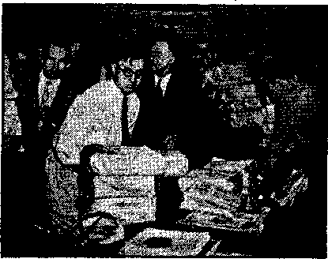
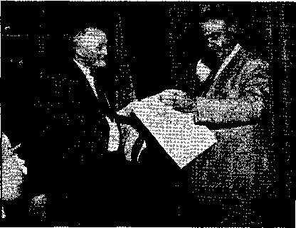

Contents
When Officials Are Subjects of Paeelli
Affidavit of Interference with Christian
Worship at Waymart, Pa,, June 23, 1940
"Armageddon—-Then a World Theocracy”
Under the Totalitarian Flag
Newfoundland's Catholic Censor
Counsel by J. H. Rutherford-
Ohio’s Governor Insults 2,042,136 Petitioners 20
The Times Advocates More Religion
Roman Catholic ‘National Prayers’
Published every other Wednesday by WATCHTOWER BIBLE AND TRACT SOCIETY, INC, 117 Adams St., Brooklyn, N. Y., U. 8. A.
Editor Clayton J. Wood worth
Business Manager Nathan H. Knorr
Five Cents a Copy
$1 a year In the United States i fl.SS to Canada and all other countries
NOTICE TO SUBSCRIBERS
Remittances: For your own safety, remit by postal or express money order. When coin or currency is lost ■ in the ordinary malls, there Is no redress. Remittances from countries other than those named below may be made to the Brooklyn office, but only by International postal money order.
Receipt of a new or renewal subscription will be acknowledged only when requested. Notice of Expiration is sent with the Journal one month before subscription expires. Please renew promptly to avoid loss of copies. Send change of address direct to us rather than to the post office. Your request should reach us at least two weeks before the date of issue with which ft Is to take effect. Send your old as well as the new address. Copies will not be forwarded by the post office to your new address unless extra postage is provided by you. Published also in Afrikaans, Bohemian, Danish, Dutch, Finnish, French, German, Greek, Hungarian, Japanese, Norwegian, Polish, Portuguese, Spanish, Swedish, , Ukrainian; also special Australian edition in English, i
OFFICES FOR OTHER COUNTRIES
England 34 Craven Terrace, London, W,. 2
Canada 40 Irwin Avenue, Toronto 5, Ontario
Australia 7 Beresford Road, Strathfield. N.S.W. South Africa 623 Boston House, Cape Town
Entered as second-class matter at Brooklyn, N. Y„ under the Act of March 3, 1879.
, 2
Appetizers
The Biggest Racketeers *
Tony: I can tell you who are the biggest racketeers.
Andy: You can? Who are they?
Tony: The lawyers, the doctors and the priests.
Andy: How did you find that out ? Which is the biggest? Explain.
Tony: It is this way: You get into trouble; you get you a lawyer; unless you pay him he lets you go to jail. You get sick; you get you a doctor; unless you pay him he lets you die. You get into domestic trouble, or you get worried about the hereafter; you get you a priest; unless you pay him he lets vou go to hell.
Andy: That makes the priest the worst, does it not? ’
Tony (astonished at his own logic) ri don’t know; does it?
A Spice of Danger '
Jones was talking to some friends of a fishing trip he was contemplating on his holiday.
“Are there any trout up there?” questioned one of the friends.
“Trout? Thousands of ’em,” replied the other, enthusiastically.
“Will they bite easily?”
“Will they!” reiterated Jones. “Why, they’re absolutely vicious! A man has to hide behind a tree to bait his hook.”—Labor.
Wrong Man Hollered
A Swede purchased an automobile and was seen driving down the street about 60 miles per hour. A policeman yelled at him to stop, but instead of slowing up, the Swede increased his speed. . '
Policeman: Why didn’t you stop? Didn’t you hear me holler back there?
Swede (unconcerned) : Oh, vas dat you dat yelled ? I thought it vas somebody I run over!
- —The ‘American Flint.
What I» It?
Len had it before, Paul had it behind, Bryan never had it at all, Ralph had it once. All girls have it once; boys can’t have it; old Mrs. Mulligan had it twice in succession; Dr. Lowell had it before and behind, and had it twice as bad behind as before.
CONSOLATION
'“And in His name shall the nations hope.”—Matthew 12:21, A.R.V.
Volume XXI Brooklyn, N. ¥,, Wednesday, August 7, 1940 Number 045
THE principles of Paeelli are overrunning the earth. These principles are Jesuitical, totalitarian, Fascist, Nazi. They are directly opposed to freedom of speech, freedom of the press, freedom of assembly and freedom of worship. Their objective is the subjugation of all men to the rule of an Italian eamorra operating out of Vatican City. This group is now definitely taking over the American republic by and with the consent of big business and big politicians, and it is not a pleasant situation for patriotic Americans to contemplate. There now follows a digest of a month’s news
on this subject. ’
The Protestant Digest of May, 1940, states that Jehovah’s witnesses “are responsible more than all others in recent years for keeping alive in American law the issue of religious freedom . . . certainly the salute to the flag cannot be interpreted as an act upon which the welfare of the nation depends. The object of the flag is to generate love and attachment for the country it represents, but there is a psychological futility in compelling a child to salute it when.that child believes it to be immoral. Under 'such circumstances the salute is an affront to the principles for which the flag stands; it produces precisely the opposite results to that intended. . . . These witnesses of Jehovah, therefore, who have vigorously revealed their disagreement with others should be granted that toleration and freedom guaranteed by the Constitution, These ‘Earnest Bible Students’—whom Adolf Hitler on April 4,1935, decreed to be ‘quacks’, dissolved them, confiscated their literature and turned their property over to the State—should be protected here in their religious rights, for only through strict adherence to this principle of personal freedom can constructive religion and democracy remain alive in America.”
By common consent of editors themselves the Baltimore Sun is the best-edited paper in the United States. In an editorial by its famous editor, Gerald W. Johnson, May 2, 1940, we find these interesting statements: “But forced salutes of the flag are distinctly not American. A forced salute of the flag,is as foreign as a concentration camp. Indeed, it belongs to the same order of ideas. . . . the moment we extend the forced salute to civilians we are extending militarism beyond the point of necessity. We are adopting, to that extent, the Hitlerian idea that the whole population should be brought under military discipline ; which is as venomously anti-American an idea as exists. The forced salute is defended on the groupd that it teaches patriotism. But it doesn’t teach Americanism. On the contrary, it teaches the sort of patriotism that is accepted in the totalitarian states. As Edith Cavell remarked, ‘Patriotism is not enough. The Germans are intensely patriotic. So are the Russians, and the Italians. But there are those who would rather see the American republic perish from the earth than see it converted to that sort of patriotism.’”
To carry out its program for destroying the American republic, Pacelli’s eamorra depends upon a toe-kissing and ring-kissing clique of newspapermen that are a disgrace to the human family. Prominent in this list is the United Press representative who sent out a story from Del Rio, Texas, May 23, which started riots against Jehovah’s witnesses all over the United States. ’
Every American newspaperman worthy of the name is well aware of the fact that no other Americans have published such vigorous denunciations of the dastardly conspiracy of Paeelli, Hitler and Mussolini against the common people as have been published by Jehovah’s witnesses. Judge Rutherford’s books and booklets, teeming with the truth on this sub-
ject, are in the hands of the reading and thinking publie to the extent of more than 300,000,000 copies. The entire population of the Western Hemisphere is set at hut 209,619,000.
' This speaks for itself and shows how little excuse there is for the malicious lies sent out from Del Rio.
Those lies caused the following newspapers to divert attention from the guilty Roman Catholic Hierarchy to the innocent witnesses of Jehovah, as follows: The Washington Daily News had a five-column scare headline “Texas Mob Chases Nazi Agents Out of Town.” The story contained the infamous lie that “the professed Nazis came to this border town of 2,000 several days ago”, etc., etc., “denouncing Jews and Catholics.” Jehovah’s witnesses in (Jer many are all in prison with the Jews, who have found them to be the only real Christians in their accursed land, Jehovah’s witnesses have never denounced the Jews nor the Catholic population, but have stated and do state that the Roman Catholic Hierarchy is the wickedest organization of liars, murderers and gangsters that has ever cursed the planet.
The usually intelligent New York WorldTelegram had as its headline “3 U. S. Nazis Driven from Texas Town”. The city editor was asleep mentally when that went into the paper. He knew better, and if he wanted the facts all he needed to do was to pick up his telephone and ask for them. The Denver Post had as its two-column scarehead “Mob of Texans Forces Three Professed Nazis Ont of Town”. The Philadelphia Daily News was not content with a lie in its main headline, which read, “400 Run Nazi Trio Out of Texas Town,” but put in another lying headline, “Pro-Nazi Records,” under which appears the following malicious misinformation, the plain intent of which was to incite the riots which followed, from Maine to California. This statement was: “Police said they forced housewives to listen to pro-Nazi phonograph recordings and leaving copies of a pamphlet, entitled The Watchtower and bearing a swastika on the cover.” ’ The many millions who heard Judge Rutherford’s lecture “Fascism or Freedom”, and which wras circulated in printed form later to the extent of 8,862,746 copies, will be astounded when they look at the cover of that booklet and see humanity shown there in chains with a ball and chain attached to each ankle, and a swastika pictured on one of the balls so at-
. • • • •.
■ ' ' < ?
tached, to think that any “newspapermtat” ■ would lie so viciously as this Del Rio man did.
The Bridgeport Times-Star half suspected there was something rotten, because it 1am6d the lying Del Rio dispatch into this headlink; 7 “Texas War Hysteria Nearly Lynches 3 ’ Pamphleteers.” The Rocky Mountain News was still more sane. Its headline was, “Gov. O’Daniel Probes Del Rio Demonstration. Pamphlets Seized, Crowd Forced Trio to Leave.” The Modesto (Calif.) Bee was clever enough to put it this way: “Mob Outbreak Is Laid to Anti-Nazi War Hysteria.”
Many decent American newspapers fell into the trap laid for them by the vicious lying dispatches from Del Rio. There is no certain knowledge that these dispatches were either written or edited by a Jesuit, but it was work of such a nature as that of which a Jesuit would be proud. The Seattle Star's headline was “Citizens Toss Out Nazi Trio”, while the Boise (Idaho) Capital News put it this way: “Crowd Chases Nazi Agents Out of Town.” ,
One of the best-posted, most honest newspapermen in America is Paul C. Yates, Journal Austin columnist. Two days after the Hierarchy’s smokescreen was sent out from Del Rio, Mr. Yates pointed out that Jehovah’s witnesses have operated in America more than sixty years; that the literature is “strongly ■ anti-Nazi and anti-Fascist, as any member of the excited crowd could have ascertained by five minutes of examination”; that the copies of Consolatioy, which were burned by the mob contained accounts of the shooting, beheading and torturing of Jehovah’s witnesses in Buchenwald concentration camp, Salzburg, Vienna and Berlin. Here are three paragraphs from Mr. Yates’ intelligent and truthful article, which those persons who think they are newspapermen, but are merely feeble-minded trained seals of the Roman Catholic Hierarchy, would do well to read.
The “swastika” emblems which seemed to have touched off the spy mania in the valley town, and caused a state-wide alarm, appears on the cover page of tract entitled “Fascism or Freedom.” The emblem made prominent by Adolf Hitler is used, however, on a ball and chain attached to a seated figure. Beside the prisoner, holding aloft a Bible, appears a deliverer.
They are religious zealots but by no stretch of the imagination could they be classified as spies or “fifth columnists.” The supreme court of the United
CONSOLATION
States a few days ago upheld them fully in their right to distribute their literature without obtaining permits from city authorities to operate within the limits of any municipality. The court pointed out that under the bill of rights of the United States constitution, no restriction can be placed upon the exercise df religious freedom.
The valleyites, in other-words, drummed out of town and illegally destroyed the property of a small band of conscientious objectors who were exercising an inalienable right guaranteed to them under the United States constitution and affirmed only a few days ago by the highest court in the land.
And this action was taken in the name of patriotism, '
Jehovah’s -witnesses have visited the people of Parkersburg, W. Va., for two generations, yet the lying dispatches from Del Rio so upset the acting chief of police that it took him three days to investigate the activities of the witnesses and to learn for himself that their literature “was violently anti-Nazi and antiStalin”. The account in the Parkersburg (W. Va.) Sentinel explained regarding the publication above mentioned that it “bore the Nazi swastika emblem on the cover, but the article related to domination by dictatorship in comparison to the liberty of democracies”.
The chief mischief-maker over the Del Rio lies was the columnist Harlan Miller, whose illustrated yarn mocking the Supreme Court and maligning Jehovah’s witnesses went out all over the country. Most papers published that column May 31. It appears in Consolation No. 543, at page 10, which please see.
The American Guardian usually gets the straight of things, and in their issue of May 31 they said something for newspaper liars to think about.
Newspapers headlined stories of the attack in such a. way as to leave the' impression that this bitterly anti-Hitler, anti-Fascist group were agents of Hitler—even the Associated Press, whose representatives undoubtedly are familiar with the true nature of Jehovah’s witnesses, carried such stories. The persecution of the organization is chiefly due to its unrelenting attacks upon the Roman Catholic- church.
Miller began to get results right away. At Kingfisher, Oklahoma, the next day, Dr. J. W. Pendleton, police commissioner, encouraged a mob to destroy the property of Jehovah’s witnesses, including hundreds of booklets and a phonograph. Pendleton swallowed the lies- he had seen in print, and said, “It’s the 'fifth column’, that’s what it is. They come around in a religious disguise, but they’re really ‘fifth columnists’.” The chances are that it was because he made such a poor physician that he is now such a poor police commissioner. Change of employment does not necessarily make a man intelligent.
The Southwest Daily Times, Liberal, Kansas, has a woman editor, Mrs. R. S. Williams, who, unlike Mr. Miller, believes the sensible thing to do is to read both sides of the story before passing judgment. She hit on a great truth in her editorial of June 3, when she said:
We do not believe those three people in Del Rio were doing any underhand work against our government simply because they had been leaving some of their literature at some of the homes. On the contrary, we are of the opinion that the charge against them is merely a “red herring” being dragged around in an effort to cover up something else that is much more sinister and wicked, yes and more threatening to the peace of our beloved country than would ever be attempted by any of the “Witnesses”.
June 3 the Boise (Idaho) Capital News had a headline “Un-American Propaganda Stirs Village”; and then followed a silly and untruthful dispatch by Vance Pollett, Middleton, Idaho, dated June 3, which contained five paragraphs, each one of which bad at least one lie in it. The story as a whole reads as if Pollett, in writing it, used only his arms and fingers. He certainly didn’t use his head.
Right in the midst of the storm of persecution, encouraged by Miller, there was here and there an editor who showed honesty and courage. Mr. N. A. Broking, editor and publisher of the Highlands County News, Sebring, Florida, is such a man, and in the issue of June 4 he was courageous enough to put some of the responsibility for much of the current persecution just where others will put it:
When the supreme court decided that school boards or others have the right to force children to salute the flag, regardless of their religious beliefs, the first stone was laid in the path to religious persecution. If one sect can be told how to worship or not to worship, even though they be a small minority, it will not be long until we will all be told just what kind of religious beliefs we may have.
On the same day the San Francisco Chronicle, commenting on the singular decision that the bill of rights is to be guaranteed to adults by denying those rights to children, significantly stated: -
It would not be surprising if the members of the Court privately think, with a great many other Americans, that these Flag-saluting laws are silly, Can you make anyone patriotic with a club? Patriotism is in the heart. Can you detect a traitor by watching to see whether or not he salutes? Traitors will be on the jump to salute.
The reason why Miller’s Del Rio lies are so inexcusable is that the Washington Post, with which he is connected, flatly refused to print, even for money, as an advertisement, Judge Rutherford’s address on "Government”, which .he gave at the Washington, D.C., convention of Jehovah’s witnesses in 1935. On this point see The Golden Age No. 411. The article, “Who Rules America? Are you in favor of America being ruled by her own people? Or shall the nation be ruled by the FOREIGN POWER from Vatican City, Rome? Why the Washington Star and the Washington Post choose the side of ROME.” In that article, on page 582, occur the two following paragraphs : ■
The Post accepted the speech, read it, set it in type, and was about ready to go to press when some powerful influence suddenly caused the Post to repudiate its contract and to refuse publication in its regular paper. As an excuse for declining to carry out its contract to print the speech the general manager of the Post said: “I have given instructions not to print the entire speech as we agreed, but we will print part of it if that portion which refers to the Vatican City at Rome and foreign power is deleted. I have marked that part that must be deleted.”
The Post then agreed to print the entire speech on its presses merely on sheets of paper without the name of the Post appearing thereon for a cash consideration of S40D.00. The entire speech was in type form, proofread, and was going to press when the order came from some high-ups: “Do not touch that stuff at all.” And again the Post repudiated its contract. . . .
Immediately after the Del Rio lies went out over the country, mob violence occurred at many places. Referring to these, the San Francisco Chronicle, in a second editorial, in its issue of June 4, said:
... at Odessa, Texas, one notes with amazement that the County Attorney is said to have ordered at first that the group be held in jail until they had “saluted the Flag”. How does a County Attorney arrogate to himself such powers of arbitrary arrest and detention? He should study the law, the Constitution and especially the Bill of Rights, as well as the rule of common sense. . . . Keep the hysteria, down! It is silly as well as pfo-ductive of injustice and cruelty. In tha:'iitnitSK best thing any American citizen can do is jfci w quietly about his business, pulling his weight in tas preparation of America’s defense program,' and , leaving the squelching of subversion to the Depatt^t > -ment of Justice. The Department will not mistake harmless religious zealots for agents of Hitler or Stalin. There are enough of the real agents to be rounded up.
The editor of the Lewiston (Maine) Daily Sun has some of the good old-fashioned American common sense that could be used to good advantage in Washington and elsewhere. In its issue of June 4, the Sun said: • .,
There is probably not one teacher in twenty who can give you a comprehensive, adequate definition of what the, flag stands for. What that flag salute . rule amounts to is a contemptible, primitive wor- , ship. Those people who put such rules into the State law don’t know what they are at work on. . . . What it amounts to is a required worship, worship by the children that don't know what they are worshiping. They never will learn by that kind of tyranny.
More common sense on the same subject is to be found in an article by Frank W. Grinnell, in the Boston Post of the next day;
With the present uneasiness about “fifth column” activities and the . difficulty of dealing with that problem wisely and effectively, without hysterical injustice, there is danger of hysterical injustice in dealing with genuinely conscientious children over this flag salute business. ... It should be remembered that one of the powerful arguments against so-called “child labor” or “child control” amend- • ment was the danger of invasion of the home and ' the right of the parents in the matter of the education of their children, . . . These things should be pondered before making any more religious martyrs out of children.
On the same day that Mr. Grinnell made Mg strike for liberty in Boston, Ludwell Denney, the columnist, referring to the 8 to 1 decision that two children, ages 10 and 12, must be forced to salute the American flag in violation of their consciences as the price of attending school, and in the name of liberty, said in the Fort Worth Press:
Instead of dealing with actual spies and saboteurs and fifth columnists, the most powerful peacetime government in the history of the United States bombs away at the liberties of children of a tiny church . . . There has been no hysteria like this in Washington since Hoover called out the Army ' against the bonus marchers. . . . Justice Frankfurter, of all persons, delivered the Supreme Court , decision saving the republic from those two chil-
dren. In that entire tribunal, which the President ''liberalized,” only one lone American defended the constitutional guarantee of religious liberty—not a “reformer” but the Republican, Coolidge-appointed Justice Stone. In a bitter dissent, he charged that the majority decision was a “surrender of the constitutional protection of the liberty of small minorities.” Of course the religious sect of which these children are faithful members is only a small powerless and derided group. Since judges have been puffed with power and states have set themselves over the souls of the humble, despised Christian and Jewish sects have been hounded by governments. Hitler was not the first, nor is he apparently the last.
On'the same day also the Raleigh News and Observer made these observations;.'
There is no reason to believe that the simple folk who compose the sect of Jehovah’s witnesses are any less patriotic than many who salute the flag with ostentatious vigor. . . . What this country needs is patriotism from the heart, not the legally enforced patriotism of the hand. If there are traitors among us, they would be the first and most ostentatious in patriotic! display. The spy would be shrewd in making a show of salute.
In an editorial entitled “The Court, the ■ Mob and Jehovah’s witnesses”, the Louisville Courier-Journal, after noting the Supreme Court decision in the flag ease, said:
But no logic, law or moral sanction—or even patriotism—can be imputed to the Texas mob. It trampled on all the rights the flag symbolizes and thereby desecrated the emblem it commanded the recalcitrants to salute. Acquiescence would only acknowledge obedience to brutal force. That delights the enemies of democracy. The “fifth column” will be in complete accord with the spirit and action of the mob. Traitors don’t hesitate to salute the flag. They “rim with the hounds”. They will chase “Jehovah’s witnesses” or any other quarry that may distract attention while they pursue their secret machinations.
A very little reflection will convince anybody that no government has anything to fear from the conscientious, but they have everything to fear from those whose consciences are in the control of Eugene Pacelli or any other man. On the same date of the above editorials the Dallas Morning News said:
So far as loyalty is concerned, outward show is leas than nothing. Your espion; your subversive alien, your native traitor will be punctilious indeed about flag saluting and even blatant in flag waving. No country has much to fear from anyone who is open and aboveboard about a deep-rooted contempt for form or sincere and genuine in his AUGUST 7, 1940 insistence that the Kingdom of God takes precedence over his mortal obligations.
On June 6, in the Henderson (N. C.) Daily Dispatch, Mrs. K. W. Edwards made this interesting statement:
I deem it a privilege to make some statements. First, I state not a person in this town nor in any other town in America ever heard of compulsory flag saluting in any school they ever attended. Why now this furor about flag worship ? Who are th* instigators? I answer, Hitler’s sympathizers and admirers, and I wish to emphasize admirers. Any one who can think above the ears will know that this is a sinister movement and un-American , . . who with Hitler want to rule the world and are stealthily trying to get a strangle-hold on American government. Now why pick on Jehovah’s witnesses! Because they have been exposing their racket and duplicity.
On the next day, June 7, Federal Judge W. H. Atwell, rebuked the authorities of Ellis County, Texas, for jailing 89 of Jehovah’s witnesses at Waxahachie. Ele reminded them that there is no law requiring citizens to salute the flag, and added that Jehovah’s witnesses show respect for the flag, though the Scriptures forbid them to deify it.
On the same day that this federal judge in Texas made these sane and sensible statements about Jehovah’s witnesses, two miners in Pennsylvania, Charles Billman, of Shenandoah, and John Walaitis, of Frackville, lost their jobs because they refused to salute the flag before descending into the mines. Walaitis was a veteran of the war of 1914-1918, in which the world was made safe for Democracy and Christianity.
On the same day that these two hard-working, conscientious Americans were being rewarded in this curious manner by their employers and fellow employees, Ernest Bradshaw had a letter in the Chicago Daily News that the whole country would be better off today if it had more people as true to their consciences as are Jehovah’s witnesses, and that their refusal to worship the flag does not mean disloyalty to the country, but “simply means supreme loyalty to God”.
On June 9, in an address at Boulder, Colorado, Judge Wiley B. Rutledge, of the United States Circuit Court of Appeals for the District of Columbia, acknowledged the valuable work that Jehovah’s witnesses have done for the cause of freedom and stated that in the regimentation of children in the Fascist and Communist salutes the very freedom for which Jehovah’s witnesses strive is destroyed.
The mob spirit spread to Maine, where mobs on the French Catholic front, i.e., adjacent to Quebec, made the mistake of thinking that they could drive out of Kennebunk men who had as much right there as they had themselves. Jehovah’s witnesses defended themselves, which they had every right to do. As consequence, two men will go on crutches the rest of their lives. People that look for trouble sometimes get it, and thus justice comes home to roost. Incidentally, the headquarters of Jehovah’s witnesses were burned to the ground. The governor of Maine has promised a cessation of mob law in the state.
On June 9 also, in Glenwood, Arkansas, the "Rev.” Roy Hughes "happened to be passing” (that’s what they always say) when a mob of 50 or more attacked Jehovah’s witnesses, five in number. Four of the witnesses were men, of the average age of 31. The account of the arrest of Jehovah’s witnesses for being mobbed by persons unnamed and not arrested, explained with regard to the "Rev.” Mr. Hughes that he "suffered a. broken nose when one of the four is alleged to have struck him”. It seems just too bad for Mr. Hughes that he happened to have his nose in the place where it was at the time of the riot. It was out of pla.ee then and will be out of place from now on.
On June 11, the. Lansdale Courier Journal (Pennsylvania), speaking of the mobs in Maine, said;
It is shame fill—and a desecration of Old Glory —when a mob uses "Salute the Flag!” as a mad cry of hate. Jehovah’s witnesses is a religious sect. To the best of our knowledge it has never been accused either of treason or subversion. Its sin, indeed, is that, it is utterly uninterested in fleshly things; its members feel bound to pay obeisance only unto God. . . . Think of it 1 A raving mob sacked and burned the headquarters of the. sect. In another wild raid, the crowd dragged from home “a screaming man clad only in underwear.” He was saved from a dose of tar and feathers only by prompt police action.
Referring to this selling of freedom short in the state of Maine, or at any rate just after the Maine outrages had received wide publicity, a writer, W. A. M., in the Chicago Daily Times, June 12, said:
True greatness was never achieved by individuals or nations when conscience was subjected to popular clamor, mob hysteria, or judicial policy. Those who have been loyal to ^the dictates of cohscience, whether Jehovah’s witnesses or the captive Hebrew children in the fiery furnace, stand out he the world’s greatest benefactors. To try and crush this divine link might be excusable in darkest Africa, but in this land which owes all it has of worth to this particular source, such an effort denotes decadence. in its most dangerous stages.
On the same subject, i.e., the Maine riots, the New York Herald Tribune, on June 13, said editorially;
This conservative old New England state has seen little lynching or other lawlessness: but the Supreme Court’s recent decision that the Jehovah’s witnesses must salute the flag seems to have convinced several hundred Maine rustics that it is their personal responsibility to see this decree carried out. The national "fifth column” hysteria has added fuel to the flames, of course. It has not occurred to these Maine Yankees that if the Jehovah’s witnesses were actually foreign spies they would not lake such elaborate pains to identify themselves as dissenters. At any rate, automobile caravans of self-appointed patriots have been night-riding in Maine, in the best Ku Klux Klan tradition. They have broken info the bedrooms of members of the Jehovah sect, forcing the members to salute the flag, and often flogging them for refusing. On at least two occasions so far there has been gun play. Six members of the Jehovah’s witnesses have been arrested for assault with intent to kill—all because they chose to defend their homes and their ideals from an illegal invasion at night. [Exodus 22: 2]
When Officials Are Subjects of Pacelli
Some idea of what can happen in any land when the officials of that land are subjects of the Italian camorra at Vatican City may be gathered from the following letter from Loui--siana, dated June 17, only four days before this article was written;
Pioneer 0. J. Golden was released from the Leesville jail sometime in the night of June 14,15 upon the advice that they had received a telegram from the F.B.I. that he was O.K. I do not know why he did not insist on staying there till morning. It was very dark and raining. It is only two mile? from the jail to our house. He started to walk home and before he hud reached the city limits he was picked up, taken seven miles south of Leesville, tied to a tree and beaten with a rope in true Hitler style, till he thought they would kill him. He was then told to Heil Hitler. Instead he uttered a prayer which seemed to unnerve them and they cut the rope and let him fall, left him lie and fled. After he rested five or ten minutes he started out the best he could to find his way out of the woods and by two o’clock on the 15tb he found a witness’ house, and while I was on my way up to the jail to take
him a change of clothing, thinking he was still there, the witness brought him home and he is resting here now. He was beaten blue over his hips so he is helpless, but will be all right if no infection starts. I wired ---- at ———■, for this seems to
be a job in which the city, parish and state police are involved and looks like there are only a few of the higher-ups doing it and have to do their own dirty work. We are sitting quiet to see what happens. It looks so much like Joshua before the gates of Ai drawing them out in the open and leaving the gates open. So trusting in the Great Theoerat, I remain
Yours in the Theocracy
F. O. J.
In Harlan, Kentucky, six of Jehovah’s witnesses were arrested for proclaiming that "the Kingdom of heaven is at hand”, the Theocracy for which Jesus taught His followers to pray, saying, "Thy kingdom come. Thy will be done in earth, as in heaven.” Five of them, kept in jail on account of the demand for excessive bond, write as follows, under date of June 15;
This finds five of us still in the Harlan jail. All are happy to have a sh'are in what the Lord said would come to pass at the end of this wicked age. The demons are very angry and show their hate for the Lord’s people through the strong-arm squad, etc., but “he who is for us is greater than all that are against us”. Your co-workers in Christ,
L. E. Carr, M. L. Lehman, S. F. Lehman, E, Hurst, Louis Beeler.
Even those whose knowledge of demon activity is limited know that it is not exactly a complimentary remark to refer to a person as apparently demon-possessed. The Scriptures make it clear that Satan’s hordes of demons would be especially active in the last days, urging men on to acts they would not perpetrate had they not given place to the demons. Certainly the actions of mobs in their attacks upon sincere Christian people bear the mark of demon influence. An example in addition to foregoing is the lawless and violent attack upon Jehovah’s witnesses at Litchfield, Illinois, where twenty-six of them were severely beaten in an effort to make them “kiss the flag” and fifteen automobiles' belonging to these harmless publishers of the Truth were overturned and badly damaged.
Commenting on this occurrence, the St. Louis Star-Times of Wednesday, June 19, calls it a disgraceful riot and says:
Tor years the American people have been reading with horror and disgust of sadistic and brutal attacks upon minorities, especially Jews, in Germany. . . . But what can Americans say of Litchfield, Ill,, where last Sunday morning the same tactics were used by American citizens against twenty-six male members of Jehovah’s witnesses? ... By way of demonstrating that the American constitution is still respected in Litchfield, local authorities should apprehend as many of the rioters as possible and proceed against them as common lawbreakers.
Yet mobs are not common lawbreakers. They are worse than mere lawbreakers, however depraved. Those who participate in mob action are the most contemptible of cowards, giving vent to the meanest traits of fallen human nature, and allowing themselves to be used by demons and carried to extremes which in their saner moments they would blush to think of. Yet they will be held responsible before God for the wickedness they perpetrate upon those who worship Him in spirit and in truth. Let all who desire to avoid such wickedness keep away from mobs as from a deadly plague. No one who seeks the approval of the great Judge of all can afford by. complicity in mob action to lay himself opdn to demonization and consequent destruction.
I AM a law-abiding Christian, born in America. I hold America’s institutions in high honor, unmatched elsewhere. I am a taxpayer of Pennsylvania and an employer of 75 well-paid, busy workers. I accept the Holy Scriptures as the infallible Word of God, and conform my life wholly to them, to the best of my ability. Besides operating my business in a humane and successful manner, I put in 20 hours a week in Christian work. My form of worship of the Creator is to go from door to door telling the people that the Kingdom for which Jesus taught His followers to pray is the only hope of the world. I take others with me in this work, and in one way or another assist more than 20 persons to do this work.. This involves some 400 miles of automobile driving every week, which expense I bear
I.
alone, and am glad to do so. I hold that the Watch Tower Bible and Tract Society teaches the truth.: its latest book, Salvation, contains 1,004 Scripture citations.
On Sunday, June 23, at about 10:00 a.m. 1 sent into Way mart, Fa., three Christian men and one Christian woman. The profit motive is entirely missing from the work of all of these, as well as myself. On that occasion they were circulating the following:
Petition to the Governor of Ohio and the Ohio State Fair Association
We, citizens of the United States, tire unalterably in favor of freedom of assembly, of speech and of worship, as guaranteed by the fundamental law of the land.
Jehovah’s witnesses, a body of Christian people, have been invited to hold their annual convention nt the Ohio State Fair Grounds, Columbus, July 24 to 28, 1940. The Ohio State Fair Association has previously contracted and agreed with Jehovah’s witnesses for the holding of that convention.
Acting under pressure of selfish interests the Association has canceled the contract and refuse Jehovah’s witnesses the use of the Fair Grounds. This affects more than thirty simultaneous conventions throughout America to be tied in with the key assembly at the Fair Grounds,
We vigorously protest against efforts of selfish religious organizations and others to induce the cancellation of said contract. We demand that the officials of the Fair Association carry out the contract that the convention of Jehovah’s witnesses may be held and that the fair name of Ohio may not be besmirched by selfish opponents of freedom of worship, of speech and of assembly.
In four hours of calling from home to home in Waymart, these Christian men and this Christian woman had secured 86 signers to the above petition. 420 signers were obtained, all together, by those engaged with me in this special campaign against bigotry, intolerance, persecution and hysteria. One of the workers called at the home of Melvin L. Kennedy, burgess of Waymart. Mr/Kennedy refused to sign, which was his right, though one would think he would have been the first person in the community" to stand by the principles of freedom of worship, freedom of assembly and freedom of speech.
However, he was not content to let it rest at that. He ordered his daughter to get his big Colt gun, which she did. lie put it on, with his belt to hold it, and gathered a posse which included Parole Officer Anges E. Wood and Health Officer Jonas K, Waters, also armed. How many others of the posse were armed is not known. It is substantially true that these four Christian workers, all of whom, as well as I, detest and abhor the governments of Hitler, Miissoliiji, Pacelli, Franco and Stalin, were chased out of Waymart by Mr. Kennedy and his posse. It is also substantially true, as claimed, that they were followed to the township line and warned to leave immediately, and also, as claimed, that ;rBurgess Kennedy and his associates were still on guard and had the road blocked with the burgess’ ear parked crosswise”.
I was brought up in this faith, my father before me, my uncle, my cousins and my brother, all law-abiding, reverent, earnest, honest Christian men. It has been taught in Wayne county for sixty years. One of the men who signed our petition is the editor of the two most influential papers in Scranton, Pa. Another is editor of a high-class magazine of 250,000 circulation. I shall, of course, continue to bear witness to the Lord’s truth in Waymart, but what I want to know is whether I am to wear a bullet-proof vest or whose foot I am to kiss when I go there.
The woman in the party, Mrs. Lucy Dietz, R.F.D. 2, Moscow", Pa., weighs a full 300 pounds. She states that one of the posse peered in the car and said, in a shamed kind of way, “Are you one of those Jehovah’s witnesses?” and she replied, “I surely am.” Is it necessary in America for officials to chase 300-pound women with guns? One of the men so rudely treated was II. E. Bachmann, 6 Edgewood street, Wheeling, W. Va., who does a considerable business with bankers throughout Pennsylvania. What must he think of the hospitalities of the pretty little town of Waymart? Another man mobbed by Mr. Kennedy and his posse was Ferdinand Thoman, Van Brunt street, Moscow, Pa., an elderly" Swiss, who hates Hitler as only the liberty-loving Swiss can hate such a monster. Why. would Kennedy, Wood or Waters wish to shoot anybody who wants freedom of worship and freedom of assembly? The fourth one insulted by Kennedy’s Nazi tactics was Fred Telshow, R.F.D., Waymart, Pa., a fanner, the support of an aged father and mother.
(Signed) Kenneth W. Hessler 334 Holden street, Wyoming, Pa.
Subscribed and sworn to before me this third day of July, 1340. (Signed) William Carey
Notary Public '
CONSOLATION
Tkii month') Supreme Court decision ’which mode Mfollng the H*g compulsory in public ichodt ouer rti« Notion hit herd IT btUrfc af the religious group ineorpuroted Ct the Intermlidnil Slblq Students' Axo-Ciftion. but usually celled Jehovah'* WitnesMix They feel Saluting idolatrous, turn to ihe Second COfYtmanrfcritnt for eom^oretion, iMxw *11, they preach 0 theocracy to arise Only *ft*r wQrld'W>de destruction by "th* beatfly tetallterlen government*."
Street eoener majeune him are a apedllc duty for the Witneemt, whtj teei they inuet warn e negligent umrld of Armageddon** approach. Recent chargee cd sedition marie * long aad bitter feud.
WUimm ewivtrrfed they nuit aufttr for their belief*. Bente Rucker, like s«m** of otter*, h** been arrested for dlitrlbutlng handbills.
Louisville la one of the c i l i e a charted for a teua^to-house etitvm by WilneaM* ahxiou* to save "the sheep from th* goats." They carry re
corded lecture*, will return for Bible readings.
cj. mm* *v huh
Ihe above is a reproduction of a full rotogravure page froa the Louisville (Ky.) Courier-Jouma] of Juno 15, 1940, showing that sone newspapers can tell th* simple truth concerning Jehovah's witnesses. There has been no nob attack upon the witnesses in Louisville, Hen,? rcuch better to do what la honest and fair# particularly in dealing with those who ore serving'Jehovah God# than to proceed as was done at Colunbua,
Twelve maating place* dot the LiJuUville area, Main headquarters are *t Fourth and Oak. During the last World War th* Witnesses were disorganized by government* tearing radical ideas.
.Sunday meetings are for M group discussion of the
Bible. There 1* no minister, but a large array of d“irrvant*,“ each intrusted with certain organisation work.
In Louisville Jehovah's wit* nossa* ara not rsoleeted, Othw citizens give then the same rights claimed tor themesIvet In sojna ehatiie-
led 3 coimnani tie s the witnesses are mobbed, their meeting places either wracked or burned and other property ruined* Louisville is American.
Cttaaetfa fo recent demonstrations againat the Wilrieaaes wu the burning of headquarter* in Kanif bunk, Maine. Previously, in the flag conUovtrty, Ihey organized their own schools in several State*.
Ohio# where Jehovah’s witnesses' contract far the use of Ihe State Fair Grounds was broken, greatly hampering their preparations for an international convention and denying to the witnesses and. the people of Ohio the fundaaental rights o f freedom of speech, freedom of assembly and freedorodf worship* in spite of a petition which in ten days was readily signed by £#042,146 American lovers of liberty and fair play.
♦ Collier's magazine for January 20, 1940, contains an article under the above title which is well worth' reading, especially since Finland, Denmark, Norway, Netherlands, Belgium and much of France have been seized since that time by the wolf that took grandma’s place. The story is by H. J. Phillips and tells the story of the wolf and the little girl as a dictator would tell it, A snatch at the story here and there conveys the idea:
To the casual spectator, perhaps, Little Red Riding Hood might seem just a pretty, little ten-year-old child, but this was a superficial piece of character analysis. The kid was not to be trusted an inch. She was a rattlesnake, a viper and an imperialist. And on top of all that she was not interested in peace or a better world order. . . ,
Grandma was a louse, too 1 No wolves liked her. . . .
Suddenly, and before he knew what was what, he found himself not only in Grandma’s cottage but in her bedroom 1 He had kicked down the door. Grandma was pretty startled, and demanded, “What is the meaning of this?” “I am repulsing an invasion,” the wolf explained, scorning all subterfuge, Grandma was an aggressor. That was clear. So the wolf ate her up. . , .
At last Little Red Riding Hood came striding into the bedroom. She was very overbearing, the big bully. . . . The wolf watched her weep and WTing her hands. . . . “Ah,” said the wolf, “so now you are going to attack me too!” . . . He tore Little Red Riding Hood to pieces to preserve his dignity, and ate her as a matter of principle.
Newfoundland’s Catholic Censor
♦ With the outbreak of the war Newfoundland placed a Roman Catholic in as censor, and the gentleman immediately manifested the fear and hatred of the Bible and of Biblical expositions that is characteristic of all under the influence of the Hierarchy. Twenty eartons of literature, including Bibles, were held, and the censor was so high-and-mighty that he refused to grant a hearing to the consignees. The consignees thereupon circulated a petition for release of the literature and, after getting 2,192 signatures, sent it to the governor. Thereupon the shipment was released, The petition was sent to the governor January 2.
But notice the methods that were employed by the defeated censor. Although he held the invoices for the cartons of literature, and the address of the consignees appeared plainly thereon, yet the notice to come and get the goods was sent to an improper address, and this necessitated a week’s delay. The consignees sent a ringing letter of protest to all the commissioners and to the governor of Newfoundland, reminding them of present plans of the Hierarchy for world control,"
♦ It seems that besides bowing three times deeply when he went in and three times deeply when he went out, Myron also had to kiss the pope’s ring. It is good that that was all he had to kiss; for both he and Mr. Roosevelt were willing to go the limit. It's so American, you know. ■
Ch r I* Lua, I9S8
tar FrlaaA:
. It 1* uncnotstarr to rtwimj you of to* ipproAOh at
Cnrl*tu« with Lt« tlttudAOl obiLfctllou Of pfotxdlbB gift* for *pocl*l frlosda, Elul 1 do *i*n to tltoi* th* tut that your
- (toattvi Frl**d, th* Infant sFtau*, wla * Gift fm you for Ml* ■ 1 tt 1 ori■. tilt you a«nd *e * Chrl*tM*Clft for Hl*f
it «m rar ih* tai vat tort ot oOul* that tot Infut J*4v* *u t>*m tot* to* world, in th* poor *l*bl« Of Botbltboa And. for to* **b* r**4*r.. M* eamtoua* to (fva MLu*lf la uo Lr. itw Sacrutat of Kto Lot*, But tbor* At* *-CAtl*r*d C*toolla* La aut* of‘lb*-vay olMlse plaot* t* i.[p,nr«nt of, utd m iodirr«r*at to Hl* cooicg *■ ■<* tot world on to* flnt Cjrx»t»a*. Your Gift *111 htlp La brim Mt* Into thalr kl*o* and htarto,
Gtv* th* Inft J**u*th* final gtoaooa yourltot *ad, Xu Hto itut, pto**« **M at Ftoa Ooi tot* if po«*ilal«F ar Thilavor uOuat you *in Afford, YOvr Cbtlttu* till bo to* t.apytor m yau txotrltec* Hl* p«M« tod 10** la proportion 1* .
ywr i»r.*ro*iiy
I IhAll p*r*aa«lLy off*? tb* ChrtolBM Kldnlgbt Him for th* LotoEillOna Of AU *ho **nd * 01.fl. - ..
TnxrJiioc you la MltolpaUO* *J*d *L*bibC you th* ffHotO**l CfcrittM* b !■*»tot*
V*ry ■to$*r*lv your* in Christ,
Tb* Cathal to Church lattaaloa
Saatoly of Canada
This letter helped an entire family to take their stand against the religion racket and for the Lord.
This midnight Baby Jesus was one too many. , consolation
Blessing of the Tanks
All army units of Italy passed in review before Monsignor Alfonso Camillo de Romanis, General Vicar of the Vatican, in Rome, at the blessing of the motorized army of Italy, They were passing in the square near the Arch of Constantine, European
[From the New York Herald-Tribune, April 14, 1940]
“Blessing”, the Tanks
♦ Always thankful to have any privilege in the way of boosting arrangements for the murder of their fellow men, the general vicar of the Vatican in Rome, Monsignor Alfonso Camillo de Romanis, acting for the Vatican, “blessed” the tanks and other motorized units of the army of Italy, At the time these tanks were blessed it looked very much as if Italy would shortly enter the World War on the side of Germany. The sympathies of the Vatican are Wholly on the side of the totalitarianstates. .
AUGUST 7, 1840
Sweep of Totalitarianism
♦ It is significant that the government of Finland is much less democratic than before the Russian invasion, that the government of Denmark is being reconstructed and will be much less democratic, and that Norway, one of the most progressive democracies in the world, is under the rule of the swastika. It is also significant that all the totalitarian powers, Germany, Russia and Italy, were pleased with the changes made in Scandinavia and that all the democracies, without exception, are not, (To be continued)
• 13
‘A good Anglican or a good Catholic with a horsewhip’
'Tn HE author of the pamphlet concerned might 1 have sung a different tunc had he met a good Anglican or a good Catholic who had a horsewhip handy!" Such was the distinctly biased statement recently made by a certain judge, presiding over the Court of King’s Bench in the Province of Quebec, in his address to the jury just prior to their deliberation before bringing in a verdict. The occasion was the trial of seven of Jehovah’s witnesses, charged with the crime of sedition for having in their homes a Bible text-book entitled Enemies.
“IT MUST BE STOPPED!” said the same judge. Tliis remark was levelled at the work of Jehovah’s witnesses of preaching the Gospel of God's Kingdom, the particular method under fire being the distribution of Enemies, which book carries the message of the Kingdom, honors the name of the Most High God, exposes the enemies of truth and points out the way of complete protection for those who love righteousness.
The seven Christians involved in this case, after being haled into court with their “seditious” equipment of Bibles and Bible text-books, were found guilty and sentenced to prison terms at hard labor, being compelled to associate with criminals of every description. Twenty-one others still await trial on the same charge.
On a previous occasion two of Jehovah’s witnesses had been convicted on a charge of sedition and sentenced to six months’ imprisonment for distributing a pamphlet entitled The Peoples’ Greatest Need, which, like the book Enemies, points the people to the Kingdom of God, Fourteen thousand letters were thereupon dispatched to business and professional men of the Province of Quebec, acquainting them with this gross injustice and enclosing a copy of the so-called “seditious” pamphlet. On learning the facts many people of goodwill expressed their righteous indignation at this treatment of Christians, while others showed a bitter spirit of hatred, openly identifying themselves as being against the Kingdom, one prominent politician stating: “Within a short time we will have our own Canadian Hitler, and he will quickly settle your case!”
Many will ask, What is the cause of this bitter spirit of opposition to Jehovah’s witnesses, and who are they?
Who Are Jehovah’s Witnesses?
The name “Jehovah's.witnesses” is taken from God’s Word, the Bible, which name the Almighty God gives to those persons who have devoted themselves wholly to His service. Such persons must witness to the name of the Almighty. “Ye are my witnesses that I am God.” (Isaiah 43:1012) They carefully study and consider the Word of God that they may ascertain His will and, doing His will, have God’s approval. They follow
Christ Jesus, and therefore do not follow any Saul of Tarsus, then a religionist, stood by and earthly leader. Their work is done at the command saw Stephen die. When Saul became Paul the
of the Almighty God and because they rejoice to obey Uis commandments.
To carry out God’s commandments,' they must preach the Gospel of the Kingdom. (Matthew 24:14} This good news is that Jehovah’s Theo’ cratic Government, under Christ the King, has come and will soon eliminate Satan and his organization, and then bring lasting blessings to all who desire peace, prosperity and happiness. They are commanded to warn the people of Christendom of the impending disaster of Armageddon and to inform them that the only means of safety is to escape-from religious organizations and flee to God’s Kingdom. >
Jehovah's witnesses do not constitute a sect. They are not reds or Communists, as the religionists and the press have unfairly tried to make it appear. They have no political ambitions, and heriee, do not support any worldly organization, but follow the admonition of the Scriptures to keep themselves “unspotted from the world.” Their work is not for any selfish reason nor worldly honor that might come to them. They seek only the honor that comes from the Almighty. They are truly Christians.
Why Opposed and Persecuted?
Jehovah’s witnesses are opposed because they publish the name of Jehovah and His Theocratic Government of peace and righteousness, and are therefore the special targets of Satan and his agents. The Devil makes war with all who are God's people, (Revelation 12:17) During the three and a half years that Jesus went about preaching and teaching the people concerning the Kingdom of God, the Devil constantly reproached Him and tried to kill Him, and finally had Him convicted on a charge of sedition and put to death. (Luke 23:5) Jesus suffered this persecution at the hands of the Devil and his agents because of His love and zeal for doing His Father's will. •
Jesus warned His disciples that they would have to suffer like reproach. He said: “If the world hate you, ye know that it hated me before it hated you. If ye were of the world; the world would love his own: but because ye are not of the world, but I have chosen you out of the world, therefore the world hateth you. Remember the word that I said unto you, The servant is not greater than his lord. If they have persecuted me, they will also persecute you." (John 15:18-20) Among these faithful * ones was Stephen, the first Christian martyr, whom the religionists charged with the crime of sedition. They had him arrested, brought into court, and bribed witnesses to testify falsely against him; and when Stephen stood before the court and testified to the name of Jehovah God and Christ Jesus and denounced the religionists, these wicked ones rushed upon him and put him to death-—Acte 7:51-60.
Christian, he also suffered for righteousness. He then delighted to be in the class in which Stephen was found as a follower of Jesus Christ. The same is true today of those who are disciples of Christ, and attempts are continually made to prevent their work being done, either through the courts or through other forms of persecution. This hatred and persecution of Jehovah’s witnesses is not because they are evil-doers or that they' do anything to interfere with the property or personal rights of others, but because they boldly and fearlessly proclaim the name of Jehovah God and His King, Christ Jesus.
Persecution in Germany
A book, entitled Crusade Against Christianity, published in German, French and Polish, has been widely distributed throughout Europe and America. Commenting on this book, The Montreal Daily Star of January 6, 1940, stated: “It is a completely documented story of the persecutions suffered by the German members of the witnesses of Jehovah, organization under the Nazi regime;’’ These Christians were there shown to be the targets of brutal and bestial persecution, imprisonment and even death itself. They were thrown into filthy jails, herded into concentration camps, families separated, homes where Bible studies were in progress broken into and Bibles, Bible helps and books which contained songs of praise to the Almighty God seized and burned. These Nazis broke up meetings where the Lord’s Supper was being celebrated and removed hundreds of Christians to unknown destinations. It is known that upwards of 6,000 of the Earnest Bible Students (Jehovah’s witnesses) have been confined to prison and concentration camps in Germany—some of them for more than five years—where they have been tortured and even put to death. Through all this, the faith of Jehovah's witnesses in the Almighty God and the righteousness of their cause could not be shaken, and their determination to serve God, no matter what the cost, has even won' the respect of some of their sadistic guards. The White Paper, recently published by the British Government, on the treatment of German nationals in concentration camps during the period 1938-39, further exposes the maltreat- -ment of Jehovah’s witnesses in Germany.
It is important to note that .this wicked and devilish persecution of these Christians began in the year 1933, the same year which was proclaimed by the head of one religious organization a “Holy Year” and which, according to him, would “usher in a golden flood of peace and prosperity.”
Persecution in Quebec
Freedom to proclaim the Gospel of the Kingdom and to serve the Lord according to the dictates of one’s own conscience is still allowed to
(Continued on page 18)
[Jehovah’s witnesses circulated this in Canada—2]
THE terrible monstrosity of totalitarian misrule is advancing over “Christendom” and all the earth, Armageddon alone will stop the monster and deliver the people of good will. The organization on earth today that has taken the name of the great Creator and that operates hypocritically under the name of His Christ is ‘‘Christendom”, which practices the falsely called “Christian religion”. She is therefore heavily responsible before Jehovah God, who will punish her with great evil or calamity at Armageddon. Jehovah God announces how Ue will begin Armageddon:
“For, lo, I begin to bring evil on the city which is called by my name [‘Christendom’], and should ye be utterly unpunished? Ye shall not be unpunished: for I will call for a sword upon all the inhabitants of the earth, saith the Lord of hosts. Therefore prophesy thou [Jehovah’s witness] against them all these words, and say unto them, The Lord shall roar from on high, and utter his voice from his holy habitation; he shall mightily roar upon his habitation; he shall give a shout, as they that tread the grapes, against all the inhabitants of the earth, A noise shall come even to the ends of the earth: for the Lord hath a controversy with the nations; he will plead with all flesh; he will give them that are wicked to the sw'ord, saith the Lord, Thus saith the Lord of hosts, Behold, evil shall go forth from nation to nation, and a great whirlwind shall be raised up from the coasts of the earth. And the slain of the Lord shall be at that day from one end of the earth even unto the other end of the earth: they shall not be lamented, neither gathered, nor buried ; they shall be dung upon the ground.”-Quoted from Jeremiah 25:29-33.
That great battle of God Almighty, led by His great Field Marshal Christ Jesus with His angelic host, will begin with the destruction of religion and religionists, this to be quickly followed by the destruction of all who continue on the side of the great enemy, the Devil, and his organization. After seeing his organization completely destroyed, the Devil himself shall then be disposed of with violence, as foretold at Revelation 19:11-21; 20:1-3,
Has the Lord God indicated when Armageddon shall begin? Yes; He has specifically stated what shall immediately precede Armageddon. According to the proof given on this page of previous issues, it was in the year 1918 that the Lord Jesus, the great Judge, began His judgment of all professing Christians at the temple of Jehovah, and He then sent forth His chosen witnesses on earth to inform the people that Satan’s world rule, hitherto uninterrupted, had now ended, that the kingdom of God is at hand, and the day of deliverance near. To them He gave the specific commandment, to wit, “And this gospel of the kingdom shall be preached in all the world for a witness unto all nations; and then shall the end come,” (Matthew 24:14) When this work of giving the witness or testimony is finished, then shall come the final end of Satan's world organization ; and of this Jesus prophetically said: “For then shall be great tribulation, such as was not since the beginning of the world to this time, no, nor ever shall be,” (Matthew 24:21) That will be the battle of Armageddon.
The League of Nations was brought forth as a substitute for God’s kingdom, to rule the earth, which League the religious leaders called “the political expression of the kingdom of God on earth”, hence the thing that should rule on earth instead of Christ; and thus they wholly ignored God’s Word. In so doing the religious organizations openly announced that they are a part of “this world”, and God’s Word has declared that “this present evil world” is under the control of the Devil, (Lukfe 4:5-7; 1 John 5:19) Nations once forming part of the League, together with the big religious organization, now boldly and wrongfully stand in the place and stead of God’s kingdom under Christ, standing, as the Lord said at Matthew 24:15 and Mark 13:14, “where it ought not” to stand, claiming the right to rule the world. Therefore that combine is an “abomination” in the sight of God, "the abomination of desolation” as God called it through His prophet Daniel (11: 31; 12:11), Out fi'om this combine of nations has grown a great monstrosity, which today is fully endorsed by that great authoritarian religious organization. That monstrosity is the government of the various nations under one arbitrary dictator, that is to say, a dictatorial government otherwise called a "totalitarian rude”. It arose first in Russia under the guise of
Bolshevism, Or Communism, Then it came forth in Italy, under the name of Fascism; and in Germany is labeled Nazism. The great organization that leads in the religion of the world now.backs up that monstrous thing, and that without regard to its name or guise.
That unholy combine is standing in God’s holy place, where it ought not to stand, and wrongfully claims what belongs alone to the Lord, whose kingdom under Christ is the only place of safety. Referring to this very hour Jesus says to all persons of good will toward God: “But when ye shall see the abomination of desolation, spoken of by Daniel the prophet, standing where it ought not, (let him that readeth understand,) then let them that be in Judsea flee to the mountains.” (Mark 13:14) The Scriptures disclose that the “mountains” here mentioned are the, “Rock of ages”, Jehovah, and his King, Christ Jesus, wherein alone is found safety.—Isaiah 26:4, margin.
The Jews that were of good will toward God gave heed to the warning He sent them through His prophet Jeremiah during the forty years before Jerusalem was destroyed, in 606 B.C.; and they found safety under .Jehovah’s- “servant”, Nebuchadnezzar the king, and were permitted to survive the destruction of Jerusalem and to live. That part of the prophetic drama shows that the people of this day who are of good will toward God and who want to do right will give heed to His warning through His witnesses and will flee to the kingdom under Christ and there find safety and be permitted to live. To do so they must forsake the religionists and must obey Jehovah. Jehovah does not desire the hypocritical, rebellious “nation” of “Christendom”, and when the people of good will therein forsake the religionists the Devil and his agencies no longer desire such, but seek to destroy them. Therefore Jehovah by His prophet says to all such: “Before the day of the Lord’s anger come upon you. Seek ye the Lord, all ye meek of the earth, which have wrought his judgment; seek righteousness, seek meekness: it may be ye shall be hid in the day of the Lord’s anger.”—Zephaniah 2:1-3.
Only those who obey God’s commandments have the promise of protection and safety during that great tribulation. Such must seek righteousness by doing right, and seek meekness by exercising diligence in gaining a knowledge of God’s Word. Instead of ill-treating Jehovah’s witnesses and burning the bpoks they-carry to the people, those who will AUGUST 1940 find safety will be eager to obtain the information contained in those books concerning the prophecies and their meaning.
It would reasonably be expected that all persons who wanted to do right and all who claimed to be servants of God would have received His warning through Jeremiah and would have given the same sober and prayer- • ful consideration. Instead, the religious leaders arrested Jeremiah and attempted to kill him because he told the truth. Jeremiah had finished giving his testimony, and, as the record reads, “then spake the priests and the prophets [preachers] unto the princes, and to all the people, saying, This man is worthy to die; for he hath prophesied against this city, as ye have heard with your ears.” (Jeremiah 26:11) Exactly corresponding thereto, the religious leaders of “Christendom” not only refuse to heed the Lord’s warning, but take violent action against Jehovah’s witnesses in this day, vehemently demanding their destruction. Repeatedly threats are made against Jehovah’s witnesses. In New Jersey, Georgia, California, Pennsylvania, Maine, Germany and other places Jehovah’s witnesses have suffered violence at the instigation of religionists. In Texas a priest led one of the mobs that committed vicious assaults upon Jehovah’s witnesses because preaching the truth of God’s Word. As Jesus foretold, to wit, that Jehovah’s witnesses would be hated by the religionists, who would seek to kill them, that prophecy is now being fulfilled.
Seeing the hypocrisy and duplicity of the religious leaders, the Jewish people of good will took Jeremiah’s side and declared themselves for God and His prophet. Likewise today, as the arrogant religionists persecute and demand the extinction of Jehovah’s witnesses, and as the people of good will see the duplicity and hypocrisy of the religionists, the result is that multitudes of honest persons declare themselves in favor of God and His kingdom.
The world is confronted with disaster, and the cry goes up: “What shall we do? where can we find safety?” Jehovah answers: 'Flee out of the midst of the Devil’s organization, the modern Babylon, and deliver your soul.’ (Jeremiah 51:6) 'Come out of Satan’s religious system, and flee, lest you be partakers of her sins and receive of her plagues,’ (Revelation 18:4) There is but one place of safety, and that is The Theocratic Government, Jehovah’s organization under Christ Jesus, the righteous King of the world. Flee thither 1
. (Continued from page 15)
some extent under the democratic governments. The Province of Quebec is an exception. For some years in that province Jehovah’s witnesses have been bitterly opposed by the religionists, who have sought every means to stop their work and have Caused these witnesses to be brought into the courts on various trumped-up charges of “disturbing the peace”, “unlawful assembly”, “peddling without a license”, “distributing circulars without a permit", “defamatory libel”, "blasphemous libel", “Uttering seditious libel”, “seditious conspiracy", etc. However, they have not been successful in having Jehovah's witnesses convicted in every case, as evidenced by a recent trial in which two of Jehovah's witnesses were charged with blasphemy. The judge, in addressing the jury, said: “These people believe these statements to be true; they have faith in these teachings, hence they have a right to promulgate them, and even if it does hurt some of us, that does not constitute blasphemy.” The jury brought in a verdict of “Not guilty".
During the year 1939 about 115 of Jehovah’s witnesses were brought before the courts of Quebec, charged with crimes of which they were entirely innocent, and some have yet to be tried. Many of their homes have been raided and literature, phonographs, records and even private papers have been seized. They have been accosted by police officers on the streets and their preaching equipment taken away from them. For three months Jehovah’s witnesses operated a mission boat along the Quebec river, equipped with an amplifying machine for preaching the Gospel to the people at the various villages and camps. At every point they encountered hostility and religious intolerance. Word was passed from town to village along the whole river front. At the City of Quebec, where they landed to move some phonographs and recorded Bible speeches, the police seized everything that had been placed on the dock. At other places they were stoned, mooring ropes were cut, and at one village they were even fired Upon from the shore with rifles.
Religionists Deny the Bible
Jehovah’s witnesses have repeatedly pointed out that there is a Clear distinction between religion and Christianity; that religion is the open and violent adversary of all Christians—which fact is apparently recognized by the judge whose remarks appear at the beginning of this article. Religion and the practices thereof are the result of demon power and influence. Christianity stands for the truth and full obedience to the law of Almighty God. Religion is demon-worship. Christianity is the worship of Jehovah God in spirit and in truth. Religionists follow the traditions and teachings of men. Christians obey the commandments of Jesus Christ.
At the trial of the seven witnesses of Jehovah aforementioned, two clergymen appeared as witnesses for the Crown. In testifying, one of these clergymen made the statement that the name “Jehovah” appearing repeatedly in the book Enemies, was merely that of the “tribal God” of the nation of Israel. It is evident that such a 'profane and impious declaration concerning the name of the Most High God puts this man in the class spoken of in the Scriptures as blasphemers. To state that the Most High, whose name alone is JEHOVAH, is merely a “tribal God” tends to lessen reverence for the name of Jehovah and is a grave indignity to the Creator of the universe. Such person, who does not ascribe honor and glory to the name of the Almighty has no right to lay claim to be the representative of God and is certainly an unsafe guide for the people to follow. This clergyman apparently overlooked, or else deliberately ignored, the following scriptures:
“That men may know that thou, whose name alone is JEHOVAH art the Most High over all the earth.”— Psalm 83:18, King James Version.
“Before me there was no God formed, neither shall there be "after me. I, even J, am JEHOVAH; and besides me there is no saviour: .. . therefore ye are my witnesses, taith JEHOVAH, that I am God?’—Isaiah 43:10-12, American Revised Version.
“I am JEHOVAH, that is my name; and my glory will I not give to another.“—Isaiah 42:8, American Revised Version.
“1 appeared unto Abraham, unto Isaac, and unto Jacob, by the name of God Almighty; but by my name JEHOVAH was I not known to them."—Exodus 6:3, King James Version. ,
These “reverends” and other theologians should know that this so-called “tribal God”, JEHOVAH, is the name of the God of Israel, whom Jesus worshipped. A clergyman should be familiar with the following scriptures:
“And there came to him [Jesus] great multitudes, . . . and. he healed them: . . . and they glorified the Gad Of ferae?’—Matthew 15:30,31, Douay Version,
“And Jesus answering, said to them: . . . Have ye not read that which was spoken by God, Saying to you: lam the God of Abraham, the God of Isaac, and the God of Jacob?"—Matthew 22:32, Douay.
“The God of Abraham, and the God of Isaac, and the God of Jacob, the God of our fathers, hath glorified his Son Jesus, whom ye indeed delivered up and denied before the face of Pilate, when he judged he should be released,” —Acts 3:13, Douay,
The fact is, these religionists deny the Bible. They have accepted and taught the traditions of men and have kept the people in ignorance of the truth. THEY DO NOT WANT YOU TO KNOWi
THAT the scriptures declare that the dead are unconscious, out of existence, and are not alive, suffering conscious punishment in some place called purgatory.—See Ecclesiastes 9:5, 10, Dway; Psalm 146:4, King James and American Revised; Psalm 6:5; 115:17. .
THAT no one has an “immortal soul/. The doctrine of the “inherent immortality of man” is absolutely false, God alone having immortality, as stated by the Scriptures.—1 Timothy 6:16; Ezekiel 18:4. '
THAT hell is not the abode of evil spirits, where the wicked are tormented. The Scriptures teach tliat hell is the grave, where all go at death. Even Jesus went to hell.—Acts'2:27, 30, 31.
THAT the doctrine of "purgatory” is pure imagination and is not even mentioned in the Scriptures. In fact, the Bible flatly contradicts the "purgatory” doctrine,
THAT prayers for the dead are of no avail whatever, but are a religious practice, based upon tradition and unsupported by the Word of God.
THAT the bowing before, or even,the making of, images is expressly forbidden by God’s Word. —See Exodus 20:4,5.
. THAT no priest or company of priests has any power whatsoever to remit sins. No organisation on earth has such power.—1 John 1:7; 1 John 2: 1, 2; Acts 10:42, 43, Douay.
THAT the doctrine of the trinity Is false, wholly unreasonable, and in direct conflict with the Scriptures.—1 Corinthians 8:6.
THAT the baptism of infants is not taught in the Bible,
THAT all theological titles are contrary to the Word of God.—Matthew 23:8,9; Psalm 111:9. ‘ Are you willing to risk your eternal existence by accepting and following the false doctrines taught by these religious clergymen? Or will you be guided by the Word of the Almighty God? You can properly decide that matter by gaining a knowledge of God and Christ Jesus, as set forth in the Word of God.—John 17:3. '
What is the reason for thus keeping the people in darkness or ignorance concerning God’s Word of truth? We quote from the book Enemies'.
"The reason now clearly appears as to why religionists try to keep the people in ignorance of the Bible and bocks that explain the Bible, and that reason is, because the Bible condemns all religion and all traditions of men, and the Bible alone makes clear the pathway of righteous-Dess, The Devil and his agents attempt to withhold the Bible from the people, lest the people should learn the truth and then See from the Devii religious organizations and find refuge in the Lord."—Pages 349, 369.
“Eneftiies” Points the Way to Life
The author of Enemies (whom the learned judge in the sedition case above referred to considered worthy of a horsewhipping) shows who are man’s true friends and who are his enemies. He points the only way to salvation. He shows from God’s infallible Word how alt the meek can gain that much-needed knowledge. We quote:
' “The Bible was not written for fools, nor is this book published for the benefit of fools. The Bible was written and given to man for hie aid and guidance, that such man of good will and purpose might be fully advised as to the right way to go and that he might stay on the side of
Cod and refuse to serve the Devil. (2 Timothy 3:16) This publication attempts to put the Bible in a simple way before the people who want to know the truth. It is not expected it will be appreciated or used by others. The Scriptures contain the word of God, and the same is true and is the proper guide for the man who wants to know and to do what is right. 'Thy word is a lamp unto my feet, and a light unto my path. Thy word is true from the beginning.' (Psalm 119:105,160) 'Thy word is truth.'— John 17:17. ,
"Let no man conclude, however, that the mere possession of the Bible or an occasional reading over texts thereof is sufficient to enable him to be wise. Many persons say: II have the Bible and know what it teaches’; and yet they are entirely ignorant of what it contains, and of the meaning thereof. The Bible is the greatest storehouse of knowledge and wisdom, A man who desires to know the truth must study the Bible and thus study to show himself approved of God and not be ashamed to acknowledge to all that ail good things proceed from the Almighty God, -(2 Timothy 2:15)"—Pages 81, 82.
"Many are the marvelous blessings to flow to those of humankind who love and obey God and his Kingdom, and amongst those great blessings, and that which is the chief one to man is life in happiness. . * To have life everlasting in health, strength, peace and happiness, and to know God and Christ Jesus and serve them, is the greatest blessing any creature could enjoy. All of those blessings Will result to those who know, love and obey God and his King; as Jesus stated: 'This is life eternal that they might know thee, the only true God, and Jesus Christ whom thou hast sent.’ (John 17:3) God and Christ Jesua will be the everlasting Friends of obedient mon and will minister blessings to .such obedient ones without end,
"All these blessings come as a gracious gift and are therefore prompted entirely by love. Only the Devil, the great enemy, and his agents, the religious organizations, could attempt to deprive men of such marvelous blessings or to keep them in ignorance of what God has provided for those who know and serve him. Therefore when all of those enemies are for ever removed, the obedient ones will dwell with the Lord, their great Prince and Helper, and nothing will interfere with their boundless blessings and eternal happiness."—Pages 864, 355.
‘Fighting Against God’
The judge who gave expression to the words appearing at the beginning of this article that the work of Jehovah's witnesses ‘‘must be stopped” and that “the author of this pamphlet might have sung a different tune had he met a good Anglican or a good Catholic who had a horsewhip handy”, would do well to bear in mind the words of an eminent lawyer of Bible fame who preceded him: “Then stood there up one in the council, a Pharisee, named Gamaliel, a doctor of the law, had in reputation among all the people, and commanded to put the apostles forth a little space; and said unto them, Ye men of Israel, take heed to yourselves what ye intend to do as touching these men.. . And now I say unto you, Refrain from these men(i and let them alone: for if this counsel or this york be of men, it will come to nought: but if it be of God, ye cannot overthrow it; lest haply ye be found even to fight against God.”—Acts 5:34,85, 38,39.
For further information reyardins the good news of God's righteous Government write for Fit EE booklet and eaiitioguc to; -
Jehovah's Witnesses, 40 Irwin Avenue, Toronto 5, Ontario
■ \
IN AN hour when millions of people are. being reduced to slavery and when lying, treachery and theft are being exalted as the coming standards of world-wide government, Governor John W. Bricker, of the State of Ohio, has apparently seen fit to take his stand firmly in the ranks already occupied by Hitler, Mussolini, Pacelli, Franco and Stalin.
No other governor of any state in the United States had such an opportunity to stand by the principles of the United States Government set forth in its fundamental law as had this man, who solemnly swore to protect the rights of the citizens of the United States in the State of Ohio, but who by his conduct has shamelessly betrayed both the government of the United States and the Constitution of the State of Ohio.
Never before in American history did , 2,042,136 citizens appeal to any governor to protect them in their rights. This number is equivalent to one-third of the total population of Ohio, It is equal to-the total population of six states of the United States: Vermont, Delaware, Utah, Nevada, New Mexico and Arizona. The amount of work involved in procuring these signatures to the petition, the language of which appears on page ten of this issue, is incredible.
|
The petition follows: |
signers |
were distributed as | |
|
Alabama |
37,091 |
Nebraska |
11,319 |
|
Arizona |
8,320 |
Nevada |
1,502 |
|
Arkansas |
19,022 |
N ew H am pahi re |
3,642 |
|
California |
144,184 |
New Jersey |
67,380 |
|
Colorado |
24,143 |
New Mexico |
6,322 |
|
Connecticut |
14,899 |
New York |
155,357 |
|
Delaware |
8,822 |
North Carolina |
31,836 |
|
Dist. of Columbia |
18,082 |
North Dakota |
9,223 |
|
Florida |
27,495 |
Ohio |
314,055 |
|
Georgia |
28,330 |
Oklahoma |
28,176 |
|
Idaho |
7,948 |
Oregon |
26,628 |
|
Illinois |
79,446 |
Pennsylvania |
179,500 |
|
Indiana |
63,357 |
Rhode Island |
5,(187 |
|
Iowa |
34,274 |
South Carolina |
33,525 |
|
Kansas |
45,075 |
South Dakota |
12,946 |
|
Kentucky |
27,029 |
Tennessee |
35,992 |
|
Louisiana |
14,786 |
Texas |
52,587 |
|
Maine |
4,873 |
Utah |
3,976 |
|
Maryland |
30,863 |
Vermont |
1,674 |
|
Massachusetts |
31,282 |
Virginia |
30,463 |
|
Michigan |
99,713 |
Washington |
60,223 |
|
Minnesota |
53,095 |
West Virgina |
40,130 |
|
Mississippi |
14,634 |
Wisconsin |
33,656 |
|
Missouri |
49,215 |
Wyoming |
1,746 |
|
Montana |
11,007 |
Total |
2,042,136 |
|
Approximately 50,000 persons were en- | |||
|
gaged in the circulation of this petition. They | |||
secured about forty names each. They averaged to work about seven hours each at this self-imposed task. At the minimum standard wage of 30c an hour this comes to a bill of $105,000 for the circulating of the petition alone. Besides showing his contempt for the petition signers, the governor of Ohio does not consider that he has any moral responsibility for the $105,000 worth of work that was freely performed to put these petitions into his hands.
Disregard of Financial Obligations
Relying upon the probity of the governor of Ohio, and relying upon the contract executed for the State of Ohio by John T. Brown, director of Agriculture of the State of Ohio Department of Agriculture, and Win H. Kin-nan, manager of the State Fair Grounds, Columbus, Ohio, Jehovah’s witnesses printed 15,000,000 leaflets advertising their convention at Ohio State Fair Grounds. The printing of these leaflets cost $6,000. The distribution of the leaflets from door to door required approximately 300,000 hours, another bill of $90,000.
Relying upon Bricker’s manhood and courage to uphold them in their rights, Jehovah’s witnesses paid $9,000 for 20,000 phonograph records, containing the following speech. If it be allowed that these phonograph records were played but five hours each, there is another bill for labor amounting to $30,000.
HO, every one who desires to know the truth as to the cause of world distress and what is the remedy 1
Bitter strife and war are wrecking the nations. The Eastern Hemisphere is being destroyed. The American continent is in great danger. Recognizing this danger, the United States is putting forth the greatest effort ever within its history to prepare for national defense. The people everywhere are being aroused as to the impending danger. This is a perilous time, which was foretold many centuries ago hy the holy prophets of JEHOVAH GOD.
Dictators are fatally bent on ruling the world by force and compelling the people to obey their unrighteous laws. Baek of the dictators is a host of unseen demons determined upon the destruction of the human race. In order to protect yourself you must be informed as to why this condition has come about just now.
Millions of sincere persons are asking the question, If we have more religion amongst us, would that safeguard us and deliver us from the threatened disaster? You should learn the correct an
350 intelligent, earnest messengers of The Theocracy bore the 2,042,136 petitions to the governor.
swer. Something must be done, and done quickly. What shall we do? Hear this: . "
A great convention of Christian people will assemble at Columbus, Ohio, from July twenty- fourth to July twenty-eighth for a careful and prayerful study of present conditions, and what has brought about the threatened world disaster, and what remedy there is for the same. Every order-loving person is invited to participate in that convention. On Sunday July twenty-eighth Judge Rutherford, known throughout, the earth as an authority on religion and the Bible, will deliver the chief speech to that assembly at Columbus, Ohio. His subject, “Religion" as a Would Rkmiuw.” His speech will be carried by land wires to more than thirty other public assemblies throughout the United States. T’or a list of these places of assembly see the Watchtouter and Consolation magazines and other publications.
You owe it to yourself and to your family to hear this speech. It is free. It will enlighten you. It will give you a lead as to what course to take to safeguard yourself. Be sure to ascertain the nearest point to you where you may attend one of these conventions, and go Sunday' afternoon the twenty-eighth of July and take your friends with you. , _ _
The speech of Judge Rutherford from Columbus, Ohio, will enable you to gain a correct vision of august 7, 1940 the present world situation and what may be expected in the very near future.
Remember the date, four o’clock Sunday afternoon. July twenty-eighth, at Columbus, Ohio. That will be one o’clock Pacific, time, two o’clock. Mountain time, and five o’clock Eastern Daylight Saving time.
The people of America love freedom and peace. They must now be on the alert to learn what has so woefully disturbed the peace of the world and what is the remedy. This is a time for sober thought. AU persons who desire to safeguard themselves will put aside prejudice, be calm, face the facts, learn the exact situation, and then avail themselves of the proper remedy,
Ts religion a world remedy? AV hat relation has religion to the way to safety? Be sure to hear Judge Rutherford lecture Sunday, July twenty-eighth. We are on our way. Join us at Columbus, the great convention eity.
Relying upon Bricker’s common honesty, manhood anti decency as an American citizen, Jehovah’s witnesses expended $4,000 for preliminary offices, miscellaneous printing, including advertising placards, postage throughout the United States, pre-eon vent ion employees, and making ready the Ohio State Fair
Each of the 350 messengers of The Theocracy bore about 6,000 petition signatures.
Grounds, in accordance with the contract, signed and executed March 12, 1940.
Relying upon the hope that Ohio had a governor worthy of the name, tentative contracts were entered into with hotels and private householders of the city of Columbus to accommodate with rooms approximately 25,000 persons for four nights. A further bill of at least $100,000.
Believing that Mr. Bricker could be depended upon to be faithful to his oath of office, Jehovah’s witnesses paid and incurred costs of approximately $7,500 as rental fees of halls and municipal auditoriums in thirty other cities, which were to have been served by telephone wire facilities direct from Columbus.
Jehovah’s witnesses were subjected to a further expense of perhaps $5,000 for notices published in the Watchtower and Consolation magazines and large numbers of other publications, notifying millions of people of the purpose of holding this convention. Legal expense at least another $1,000.
The vacation arrangements and other conveniences and comforts of 25,000 people were interfered with to an extent that would not be more than repaid if they were awarded damages of $40 each; and that means another $1,000,000, making a total of $1,357,500.
On June 14 Mr. Cross, president of the Columbus Board of Trade, stated that John T. Brown, director of Agriculture of the State of Ohio Department of Agriculture, had told him that he had discussed with Governor Bricker the cancellation of the contract with Jehovah’s witnesses for the use of the Fair Grounds and that the governor had expressed his full endorsement of the reasons of Browm and Kinnan for canceling the contract.
Five days later seven prominent business men called upon the governor at his office to inquire as to the reasons for the cancellation. The governor kept these seven men wmiting for' an hour and ten minutes before he admitted them into his presence. These men explained to the governor that Jehovah’s witnesses were a fine class of people, had brought a lot of money to Columbus in years gone by, and had always paid their bills. As if he did not know anything about the confabs he had had with Brown and Kinnan, he asked, “Why should they cancel the contract?” The object of this inquiry was to drag the flag salute and military service herrings across the trail.
Another question he asked was, “Who started all this opposition?” and when he was told that it started with Roman Catholic priest John Murphy, as privately admitted by Mr. Cross, the governor said, “Who is he?” as if he did not know. .
Sixteen days later, when the 350 delegates bearing the petitions arrived at Columbus, the governor betrayed his uneasiness and his cowardice as is disclosed in the following paragraphs, from a report received at the office of the Watchtower in Brooklyn:
The two entrances leading to the governor’s reception room and office were closed and locked. The writer proceeded to the adjutant general’s office to make inquiry, and was requested to call the governor’s office on the telephone. The operator advised that the governor had left his office, that his secretary was not in, neither was the lieutenant governor present. To the operator’s inquiry whether we represented Jehovah’s witnesses, we answered in the affirmative and stated that a definite appointment had been made with the governor to be present in his office at that time. The operator stated that the whereabouts of the governor during the noon period was not known, nor the whereabouts of his secretary, or of the lieutenant governor. The operator further stated that the governor would return at 1:30. We advised that 350 delegates were present in the corridor at the doors of his office bearing a large number of petitions and were prepared for the conference that we had arranged, and, therefore, would remain until the governor appeared.
The conversation had hardly terminated when the doors of the governor’s office opened, with the governor and his secretary present. There were consolation
also present in the governor’s office representatives of The Associated Press, United Press, Scripps-Howard Newspapers, Columbus Dispatch, and Columbus Citizen.
All the messengers of The Theocracy entered the governor’s office bearing one, two and three parcels of petitions. The governor appeared very much upset and confused. He appeared suddenly and disappeared as quickly, shuttling between the reception'room and his office. At first he requested that all petitions be left on his desk; when he saw the volume increasing to a point where they literally covered his desk, he requested that they be removed and placed on the floor. This had hardly begun, when he made the request that they be .placed in the basement alongside the corridor wall, which we agreed to do.
The official excuse set forth June 21 for refusal to carry out their contract was stated by John T. Brown, director of Agriculture, in the following language:
We canceled on two grounds: They refuse to salute the flag, and they were definitely antiCatholic.
The flag-salute issue is all moonshine. Only within the last year or two has there been an effort to put over the idea that all that is necessary to make a patriot is to compel him to salute the flag. Tens of thousands of men have died upon the field of battle in defense of their flag who never had the least thought or intent of violating the Second Commandment, Exodus 20:3-5, by worshiping it.
The fact that Jehovah’s witnesses are noh-Catholie gets down to the real root of the matter; but since when did it become necessary in the United States to refuse auditoriums to people who are non-Catholie ? Why does not Governor Bricker go the whole hog and issue a proclamation that Jehovah’s witnesses should be killed? He might as well. He has taken the first step in the program, and the rest is easy.
Among the Catholic authorities who have publicly stated that the Catholic Church ‘ claims the right to murder non-Catholics are the following: Rev. Fr. De Luca, professor of Canon Law in the Papal University at Rome; Cardinal Lepicier; Cardinal Mannix of Australia; Rev. Fr. Oldra", Jesuit of Turin, Italy; Hilaire Belloc, Catholic author; E. Boyd Barrett, former Jesuit; and John Harney, superior-general of the Hierarchy’s “Society of Missionary Jesuits” (Baalist Fathers) of New York city.
This willingness to murder people who dif-
AUQUST 7, 1040
Left, an earnest, honest messenger of The Theocracy; right, John W. Bricker, governor of Ohio, sworn to protect and preserve freedom of assembly, of worship and of speech.
fer with them is directly contrary to the decision delivered May 20, 1940, by the United States Supreme Court, that “in the realm of religious faith, and in that of political belief, sharp differences arise. In both fields the tenets of one man may seem the rankest error to his neighbor. . . . Rut the people of this nation have ordained in the light of history, that, in spite of the probability of excesses and abuses, these liberties are, in the long view7, essential to enlightened opinion and right conduct on the part of the citizens of a democracy”.
Bishop Bartley Could Not “Take It”
On June 28, 1940, Nathan H. Knorr, vicepresident of the Watchtowkk Bible and Tract Society, addressed the following letter to James J. Hartley, bishop of the Roman Catholic Diocese of Columbus, Ohio. Bishop Hartley made no response, which is the favorite response of those who have no response to make.
The Watchtower Bible and Tract Society, publishers for Jehovah’s witnesses throughout America, have contracted with the Fair Association at Columhus for the use of the Fair Grounds for a convention, to which a number of other cities will be tied by private land wires, where conventions will assemble. ’
The President of the Association, J, F. Rutherford, is advertised to speak at that convention on the subject “Religion as a World Remedy— Evidence in Support Thereof”.
According to the public press, and other information, you have used your influence to pre-
23 vent this assembly. You are reported as saying 4 that “They have a right to freedom of assembly, and freedom of speech, but we don’t have to furnish them a platform”.
This letter is to invite you to withdraw your objection and ask the Fair Association to withdraw their objection; then for you to appear upon the same platform with the President of this Association, and speak for one hour on the same subject that he is advertised to speak upon; you to speak first for one hour, and he to follow with one hour's speech on the same subject. In the event that you are unable or unwilling to personally appear on the platform, then we ask you to select some high-standing Catholic of the Hierarchy in America to occupy that place for you and address the people for one hour upon the subject “Religion' jus A Would Remedy”.
If you are in favor of freedom of speech and freedom of assembly, in this time of peril upon the peoples of America, as well as other parts of the earth, you will have sufficient interest in their welfare to accept this invitation and go before the people and let them hear what is to be said in order that they may seek the way of safety.
Many of the facts stated in this article were brought to the attention of Federal Judge Mell G. Underwood, but no relief was obtained, except in the satisfaction. Jehovah’s witnesses receive from the following two paragraphs of Judge Underwood’s decision:
There is in the petition a declaration that the constitutional privileges of the plaintiffs have been infringed and that the plaintiffs have been deprived of the constitutional rights of free speech, freedom of assembly and freedom of worship. ,
These are serious charges if well founded, and demand the most considerate attention of any court. This is particularly true during periods such as the present, when public emotion reaches a high pitch. In such times acts are often committed which would be unthought of in more sober moments.
There are still in America some people who love liberty. Some of these are in Columbus, and one of them is a Presbyterian minister. In the Columbus Sunday Dispatch of July 7, 1940,, under the caption, “The Jehovah's witness' Controversy,” an unnamed but manifestly liberty-loving writer said:
The writer of this ;is not one of the so-called “Jehovah’s witnesses,” but is a Presbyterian minister in good standing, a graduate of the College of Wooster (class of 1892), and the McCormick (now Presbyterian) Theological seminary of Chicago.
Yet the writer views with great regret the decision to deny the use of the Ohio State fairgrounds to the religious sect just named because of the refusal of members of this body to “salute” the United States flag.
It seems to me to be a sad commentary upon the religious liberty guaranteed by the Constitution of the United States to refuse the use of public buildings and grounds to a religious sect on the ground of certain religious beliefs,
No doubt the department of agri culture has a right to refuse—or permit—the use of the stats fairgrounds to any organization as it sees fit, but the reason for refusal should be something other1 than a religious tenet.
Then, too, may I ask: Is there any statute which requires any American citizen to salute the flag? I was brought up in Ohio (at New Lexington), Never in my school days was I asked to salute any flag. I have only heard of such a certpnony in recent years.
The flag and the cross are symbols. Personally, I do not bow before a cross and I do not salute the flag. I honor the flag in my heart.
Two large flags are hanging on my front porch as I write this letter on the Fourth of July. I have been a member of the Ohio National Guard. I believe in my country, as I trust the Jehovah’s witnesses do, and, like them, I am ready to serve my country in every right way and suffer for her if need be. But the mere “saluting” of a flag is in itself an outward form which means little,
Jehovah’s witnesses have also been favored with a copy of a letter written to Governor Bricker by Edward Everett Hale, president of the Descendants of the American Revolution, 512 Fifth Avenue, New York, which reads as follows:
The National Executive Committee of the Descendants of the American Revolution, meeting July 1st, 1940, adopted the following resolution for your attention:
Whereas, Jehovah’s witnesses, a religious group, have been denied the use of the Ohio State Fair Grounds for their convention July 24 to 28, 1940, although previous contract had been made with the Ohio State Fair Association, and .
Whereas, the cancellation of said contract seems to be an abrogation of the right of free assembly and speech guaranteed by the Constitution of the United States;
Therefore, we urge that you employ your best efforts to see that the contract with Jehovah’s witnesses be carried out by the State Fair Association.
Governor Bricker put Jehovah’s witnesses to a lot of inconvenience and expense; however, when they found he was but a puppet in the hands of the Roman Catholic Hierarchy they merely moved the Convention to Detroit.
TT1HE TIMES, leading newspaper of Britain, J_ has undertaken to circulate a pamphlet, Religion and the National Life, in which it deplores the decline of religion. It is disturbed that religion is being neglected in the schools, and young people are having a “purely heathen upbringing'’. The instruction of children in Bible truths is not the prerogative of the State, and this is so recognized by the State of Britain, But both the State and the religionists err when they maintain that the instruction of children should be left to the churches. The Bible says no such thing, but places the obligation of Bible instruction upon the parent. "Recently, in American schools, young people have been expelled because their parents instructed them in the Bible and taught them that to attribute salvation to any flag is a direct violation of the second Commandment.
For educationists to force their religious views contrary to the parental instruction is a serious evil; and if Th e Times’ idea is put into Operation, who shall say but that the same intolerance will happen here ?
Since the sixteenth century, the British people have supported the principle of “The Open Bible'’. The British race owes much of its enlightenment to its Bible-reading forefathers ; for it was the contents of the Bible that led them to reject the claims of the Ronjan Catholic Hierarchy of Religion as being inconsistent with, and contrary to, the teachings of the Bible. The wide gulf between Christianity and religion, although now clearly shown to all whose minds are rightly directed, was seen and appreciated by a few when the opportunity of diffusing that knowledge was limited. The suppression of the Bible and the persecution of those who translated and printed it, and the setting up of the Inquisition by the Roman Catholic Hierarchy to penalize and punish all who were caught reading it, opened the way for the liberty of thought and freedom of conscience that has been fostered by every succeeding generation of Britons.
Religion is deceptive. It does not magnify Jehovah’s name nor place His law as supreme. It makes, itself a part of the State, though Claiming to be the “Higher Power” in that State. Hence it destroys the peace of mind and freedom of action of all who continue to practice it.-
AUGUST ?, 1M0
A recognized authority on words was Arclh bishop Trench ; and of “religion” he says:
’ A religious person did not formerly mean one who felt and. owned the bond that hound him to God—but one who had taken peculiar vows—the member of a monastic order of religion. As little did a religious house then mean nor does it now mean the Church of Rome, a Christian household, but a household in which these persons were gathered together according to the rule of some man.
The etymology of “religion” is this:
“It is an expression of the reciprocal bond of man with the world in which he is merged and his duty and obligation to the gods who are overlords of that world.” (2 Corinthians 4:4) '
Religion is the outcome of the mind of man, and is his recognition of the political and commercial State in which he is merged. Christianity is the Truth because it is based on the precepts of Jesus Christ. A religionist cannot be a Christian; for the Theocratic Government of Jehovah is the city the Christian aspires to, and witnesses to that end. No w-ords could be plainer than these spoken by Christ: ‘"Ye are not of the world. If ye w$re of the world the world would love its own?
Religion accepts only the homage of the prostrate and scorns those who stand erect. Religion cannot tolerate liberty of thought— her subject must cringe at her feet. We have had more than sixteen centuries of religion in which millions of young children have been inducted by priests and clergy, and during that sixteen hundred years religion has been responsible for the bloodiest crimes in history.
The disciples of Christ were called Christians because they declared the Truth as He did, and exposed the religionists'as following the creeds of Satan. Jesus condemned all religion as sensual, endeavoring to worship a deity Jhrough rites, ceremonies, images and pride of pomp and show'.
' Let The Times take note that ninety percent of children leaving the English schools hold the Bible in contempt. They have been nurtured in the doctrines of evolution and they treat the creative work of Jehovah as a fable, and the Old Testament as an undesirable book. If the children are heathen, then religion has made them so; for in all the seminaries and colleges evolution is accepted in place of the Bible. One of the noted bishops of the country is a leading evolutionist and it is difficult to find any clergymen who have any belief in the
25 prophecies or who hold that the Bible is the infallible Word of God.
Can it be expected that honest and conscientious parents would desire religionists to teach their children, when the religionists flatly ' deny the very foundation upon which they claim to stand? If there are multitudes of parents who do not instruct their children it is because their own faith has been destroyed by the religionists. When they see Catholics (priests and laymen) fighting each other in the Spanish civil war and the pope sanctifying the rape of Ethiopia to be followed by German Catholics fighting against English Catholics in the present war, it is enough to sicken any heart, and to bring forth the cry “Away with Religion!” To label such practices as Christianity is a ■wicked defamation of God’s holy name and is therefore harmful and injurious to the people.
Religion cannot save the nation; it cannot educate children or adults in the way’ of life: this can be done only by Bible teachings.
A letter was sent to The Times, pointing out the confusion of the terms “religion” and “ChristiarJ religion” with Christianity. In a private reply, it acknowledged the loose use of the words.
There is no Christian religion, but there is a Christianity. Nowhere has The Times called for the magnifying of Jehovah’s name and Christ His King. Not one word does it speak about the great Theo er at and that His Theocratic Government is the only hope for the world and the only government that will endure for ever. (Isaiah 9:6)
There can be no true education until the great Theoerat has the first place in the heart of His creatures, whith cln be gained only by accepting the infallible Word of God and rejecting all religious formalities and tradition which has brought the world to its present pass. :
The British reading public know that religion prostitutes to any form of government, whether totalitarian, democratic or Communistic, so long as it gains pride of place and it is looked upon as a “Higher Power”.
How would The Times answer the questions of the intelligent schoolboy who asks, “Why are there,so many different religions ?” “Why do they all fight one another?”
Perhaps The Times would revert to the Scriptures and declare, fA house divided against itself cannot stand.’
It is the molding of professed Christians with this world that has led to so much confusion and perplexity. This can be readily gauged when the child’s mind is first illumined by the thought that religion is not Christianity. The Times’ contention that without religious instruction man is a heathen is false reasoning; for Paul abandoned religion to become Christian and other religious proselytes came over to Christ. There is no heathen nation without a religion, but every nation is without Christ. ■
One writer supporting The Times suggests a union of Roman Catholic, Anglican, Free Churches and Jewish religions. Is he not aware that the Jewish religionists refused and still refuse to accept Christ? Is this not proof of the affinity of all religion, and that it is, and always has beAi against Jehovah and His King, Christ Jesus?
It is the Bible that is the revelation of Jehovah; it rejects religion; for Jesus said:
‘In vain do you worship me, teaching for doctrines the commandments of men, laying aside the commandment of God. You observe the tradition of men and make the word of God of none effect.’ (Matthew 15:1-9)
Religion is a philosophy, based upon human wisdom. The learned scholar has no more claim to an understanding of the Bible than the most untutored creature; for Jehovah is the repository of all truth and He will reveal the treasures of His Word to whom He will. Worldly learning is no qualification. The Times must recast its thoughts. It has np authority for claiming that this war is to preserve Christian principles. To what impotency is Christ subject? and how will they answer His own declaration, “My kingdom is not of this world” ?—F. L. Brown, London.
♦ When Vina Short, wife of an unemployed miner in Nauvoo, Alabama, and then living in a two-room cabin, had her new baby, she had four at once, three girls and a boy. Nauvoo rose to the occasion, bought the Short family a new seven-room house, furnished it from top to bottom, and when Vina came home from the hospital she was brought in the mayor’s automobile. There were five babies before the neijt ones came, so it was pretty fine of Nauvoo to think and act the way it did. ‘
♦ One doesn’t have to go to Germany to find Nazism; Just'take a trip to Florida. At Pompano, in that state, four colored pien were accused of the murder of a white man. For five days the four black men were beaten and questioned until a confession was obtained. That confession did not suit the State’s aV torney, and so the police tackled the job once more and after two more days of beating the prisoners, depriving them of sleep and threatening them with death, fresh confessions were obtained which the State’s attorney thought he could use. The men were convicted. The Florida Supreme Court reviewed the ease three times and each time sustained the verdict. It.finally came to the United States Supreme Court and was reversed. America is not quite ready even yet for the methods of the Gestapo and Ogpu, but is coming along, helped mightily by many stupid, ignorant and vicious police;
♦ The manner in which most of the states of the Old South were settled by white men is something like this: English kings and queens bestowed land grants upon court favorites and corporations. These grants were given as fiefs or feudal estates, and frequently contained more land than many European principalities. Under these circumstances nothing was further from the mind of the Proprietors, for so they were called, than the establishment of democracy in their private domains. On the contrary, both Crown and Proprietors hoped to duplicate the archaic feudal institutions on American soil. But as soil is ■worthless without labor and the new Proprietors belonged to the chosen tribe whose motto is, “You work; I eat,” it became imperative to import labor. This was achieved in the following ways t
Compliant English governments, anxious to settle their colonies and get rid of the swarms of serfs made homeless and jobless by the breaking up of feudal estates, transferred their vagrants, felons and workhouse denizens to ship captains' who on arrival to America sold them to America’s new feudal lords for the price of the passag'e. The period for which the indentured servants or bondsmen were sold ranged from five to ten years. However, an the Proprietors combined the roles of land-
AUQUaT r, 1840 ‘ lord, slave owner and magistrate, unruly bondsmen were frequently punished writh additional years of servitude, thereby combining justice with profit. On the other hand, as the terms of the temporary white slaves expired they became freedmen, in the sense that as free men they were at liberty to dispute with the Indians for a patch of their land, or become tenants, sharecroppers and field hands for their former masters.
Unfortunately for the latter, their estates were too huge and existing transportation facilities too poor to be operated by centrally supervised hired men, croppers and tenants. So in the course of time it became more profitable for the'Proprietors to sell part of their land to freedmen. Needless to say, the part they sold was usually the less fertile land, or land far removed from the navigable streams which constituted the principal arteries of transportation in that age. Thus the river bottoms of the South remained largely in the hands of the original Proprietors, heirs and assignees, while their erstwhile serfs and numerous progeny were gradually pushed into the hill country. Hence hill-billies.—Oscar Ameringer, in The American Guardian. .
♦ In Miami, Florida, Charles H: Barnes, laborer, went on relief and finally died in a hospital charity ward. After his death his wife received a second notice that the rent on his safety deposit box was due. She had the box drilled open and found herself in possession of a fortune of $47,000, some qf it in $1,000 bills. She has no knowledge of how her husband came by the money. He had once lived in Jersey City. Maybe that is sufficient explanation.
♦ Cross day at Tarpon Springs, Florida, went off with the usual foolishness in 1940. The archbishop of the Greek Catholic church throws a Greek cross into the water and then some “hero” with more strength than sense dives in and pulls it out, and he becomes a great man for that one day. In 1939 two young men grabbed the cross at the same time and pulled it apart. The one with the biggest chunk was the “hero”.
27
/-
By J. Hemery {London)
• With the sound of the guns firing on the French coast, the exploding of bombs on the eoast of English counties, and now and again inland, and the firing of anti-aircraft guns, the war has eoine appreciably nearer to Britain. Up to the time of this writing but little damage has been done, and the land, and the people, and the business of the country continue to carry on, apparently much as usual. The earth has continued to give its increase, and the late springtime, with what has seemed an extra share of sunshine, has brought what would have been, but for the overhanging eloud of the terrible war, one of those delightful seasons which make these islands a delight. Actually all the resources of the nation, the land, its supplies, its businesses and its peoples are now cither directly in the care of the Government or at its control; for the recent emergency legislation has put all persons and all property in the control of the Government. This complete change from the liberty of a free democracy to the ruling of what is totalitarian government is accepted by the people as that which must be borne if the democratic freedom is to be the rule of life in Britain. Quite apparently the sacrifice is willingly made: owing mainly to the Emergency Acts newspapers are under the restraint of printing nothing that might be detrimental to the defense interests of the nation, and therefore the usual letters of criticism are not in evidence; but the readiness to accept the situation is readily sensed. It is realized that the Government, represented by the Cabinet, has a. tremendous task in hand, in the conducting of the war, in regulating the whole of the manufacturing, mining, transport, and in watching and ordering the general business affairs of the country’, and by no means least, in providing food sufficient for the people, and seeing to its proper division amongst them. The absolute right about from democratic freedom to an approach to the totalitarian form of rule, carried through a free Parliament in three hours, has naturally brought many limitations, and some restrictions which at first seem irksome; but no one has gone short of food by reason of the war. The minister who is now in charge of the food supply, Lord Woolton, is a man of the people. Born and raised amongst them, he knows their needs and has a sympathetic disposition. He got his elevation to the peerage through his energy in business and his public service in days before the war.
It cannot be said that there is any warlike spirit being showm, but there is a purposeful spirit to see this thing through at whatever cost. The terrible things which have already happened in Belgium and northern France have shocked the people and set them more resolutely in that purpose for which the Government declared wmr; that is, to free Europe from ruthless aggressors and for the liberties of free peoples. But no nation can enter into war of aggression or of defense of its liberty without getting something of the war spirit; nor can a government change over from that of a free democracy into a totalitarian form without creating a beaurocraey which will take on some of the evils of the dictator government. Alen, being what they are, when in the midst, of battle take themselves out of the conventions of life by which they ordinarily govern themselves, and often act contrary to the principles for which they take up arms. This is noticeable in the growing spirit of antipathy towards those who for conscience’ sake cannot take up arms, or share in war. Undoubtedly the tribunals set up to examine conscientious objectors have rightly come to the conclusion that very many who sought to take advantage of the Government’s provision of exemption of such from war service were moved more by political ideas than, by conscience. Yet they as rightly gave to many the freedom intended. But a. spirit of anger and, in some cases, even of hatred is showm towards the conscientious objectors and many of them are being turned out. of employment because of this. There is a probability, now that every person in the land is under the control of the Government, the conscientious objectors may be conscripted to do some work for the country which should not violate their conscience. Such a course might do something to satisfy the feelings of those who object to conscientious objectors; but that would not alter the fact that many of these conscientious objectors are themselves fairly comfortable at home and earn good wages. The nation took arm? for the
rights of free peoples, whatever other aims it had—-and certainly the Empire’s interests ■' were well inside the decision it took; but the entanglements of the war do not, cannot, make for righteousness.
Whatever the result of the present terrible conflict—and every right-minded person realizes that freedom in life, freedom of mind and body, and freedom to worship God according to the Scriptures are at stake—there can be no question that the upheaval, both the present and the greater one which must follow the war, vitally affects both Britain and the whole world. Those who have taken the warning which Jehovah, the Living God, the Creator, has caused to go out through all the world by Judge Rutherford and Jehovah’s witnesses understand well that this war is involved in that time of trouble of which Jesus spoke at the end of His ministry. Wickedness and cruelty and the arbitrary use of human flesh and blood to further the designs of ambitious men, instigated by the Devil and under the control of wicked spirits, are abroad in the earth, and that evil cannot be stopped by armaments. The nations are entering into the time of crisis which will end in Armageddon, and, as the message of warning still declares, the only way for any to escape its destruction is to find cover in The Theocratic Government, the long foretold kingdom of God, now set up under (Jhrist the King.
Roman Catholic ‘National Prayers’
• The Roman Catholic church in England associated itself with the order of the king of England to the churches under his control to ! pray on Sunday 26th May for victory for the national cause. Presumably all Roman Catholics serving at mass followed the advice of the Rbman .Catholic cardinal archbishop Hinsiey. The Catholic Times published for use on that day a number of “prayers for private use”, saying the prayers were approved by Cardinal Hinsiey, and adding, “The intentions are for Our Holy Father and his intentions, for our King and Country and People, and for a just and honourable peace.” None of the prayers is addressed to God: all commence, “Most merciful Jesus . . . ,” but each prayer concludes, “Oh Jesus, with faith and trust we beseech the Father and Thee in Thy name to grant us the grace of a just and • honourable peace and in union with Mary thine immaculate mother' we will say: ‘Behold the handmaid of the Lord—be it done AUGUST 7, 1840 ' unto me according to thy word.’ ” The Roman Catholics are carefully led to pray first for the pope, afterwards for the king and country and people of Britain, and then, using the pope’s words, for a “just and honourable peace”. The Roman Catholics are sadly and badly misled by their dignitaries. Devout in mind, as great numbers of them undoubtedly are, they will in their ignorance of the Word of God fail to perceive that prayers not addressed to God cannot be heard of Him. The plain fact is that the Roman Catholic church has by its dogmas, doctrines and practices hidden the knowledge of God from the people, and has exalted Jesus, His Son, to the highest place. When Jesus taught His disciples to pray He directed them to call upon His Father and their Father, saying, “When ye pray, say, Our Father which art in heaven . . . ,” and in no single instance in the sacred Scriptures is there direction to pray to Jesus, or example of such prayer. The use of the words of the maiden Mary as she submitted herself to the will of God become blasphemous as used in the ‘approved prayers’; for with great presumption the Mariolatiy of the Roman church is put into the mind and the mouth of each Catholic worshiper.
“The Church Speaks Out”
• This is the heading of a public declaration, as reported in the Yorkshire Observer, made and published by about a hundred clergy and Nonconformist ministers of Bradford and district. It is the result of a private meeting of these men, concerned with the state of religion in their neighborhood; it is intended as a call to neligion. It is more pointed in its statements of the present position than the “call” which the archbishop of Canterbury issued on behalf of the church of England, and which fell on dull ears. These men say, “Man has, in whole or in part, rejected God’s claim upon him”; that “human achievements . . . have encouraged men to.think that purely human forces can set the world right and that God is irrelevant to the practical ordering of life . . . that spiritual ends have been made subordinate to the pursuit of wealth and power.” They say, “Society is permeated with the, desire for money and the power of money.” They witness to the fact that “hideous inequalities of human conditions and the moral outrages of widespread ehronie unemployment and of poverty in a world of plenty are allowed to exist”, and add, “Men have lost faith both in God and in man.” This company of Bradford clergy, headed by the bishop of Bradford and supported by the representative leaders of the Nonconformists, declares, “The Church has to confess with penitence that it has failed to witness against these evils as boldly as it should have done.” From their own position no doubt they speak the truth about the clergy of all sections, but whether the higher-up dignitaries of their various sections will agree to this declaration is a moot point. This action and the declaration are themselves only of passing interest as showing that some of these men see the need for a revival among their class, and the fear that is coming upon them for the interests of religion. With this declaration, however, is a statement of faith and convictions which reveals the wrong both of their faith and of their assumed position as a clergy class. That they may issue a joint declaration, though representing different sections of religion, they first assert their orthodoxy by their belief in “The Trinity”. This allows them to act together in such a matter as that before them, though this common bond does not allow a church of England parson to join in with his orthodox brethren in partaking of the “communion” emblems 1 And, of course, their orthodox bond of union, belief in “The Trinity”, though the same as that of Home, from whom they got it, is not accepted by the Boman Catholic church: orthodoxy with that church means acceptance of all it stands for. Amongst other things, these parsons say of man, lcMan lies in the grip of evil, from which he is delivered by the death and resurrection of Jesus Christ . . ■ and his forgiveness [is] freely offered to all who will accept it and turn to him in renewed obedience.” They aver that “the final object of our Lord’s work is the establishment of God’s kingdom of love and righteousness here on earth and its perfection in heaven”. Then .comes in the fundamental error out of which parsondom has arisen and by which it continues its self-appointed privilege. The declaration states, “The church was founded ... to be the instrument of his kingdom . . . the church [is] by the spirit to . . . proclaim the gospel, and to promote his kingdom. . . . that in this as at all times the fulfillment of God’s purposes depends upon human instruments through whom by his help the world can be set right; whenever man refuses to side with God, God’s purpose is frustrated and his kingdom delayed.” Besides making an urgent appeal to those who profess to worship God through religion to a greater zeal, an appeal is made to all who have no religious convictions to come to the help of God and to give him “the opportunity for which he yearns of using them in his service for the deliverance of mankind from the dominion of evil”. The plain declarations of. God through His prophets that His kingdom would be set up on time, exactly according to His purpose and that at a time when men are in a state of active rebellion against Him, and the clear statements of the Lord Jesus saying the same thing, as, for instance, at the 24th chapter of Mathew; also the inspired words Of the apostles written to instruct the church of God, are ignored and perverted. Protestants, as they are distinguished from Boman Catholics—though they no longer protest, but arc ready to agree that the Boman Catholic church is the chief if not the head of the churches—ignore the Word of God as spoken by His prophets; and all “orthodoxy” perverts the words of Jesus and the apostles which tell of His establishment of the Kingdom amid opposition by both religionists and those who reject God and Christ. These 100 parsons and preachers, undoubtedly sincere in their fear as they see the disintegration of religion and morals, and the rejection of God, yet belong to and are supporters of a class system repugnant to the Word of God and the teaching of Jesus while in the flesh, and of His instruction as the glorified Christ through His servants the apostles. They have taught men to discredit the Scriptures, and now want a revival in belief, and that while yet they occupy a place which is self-appointed, and while they still themselves pervert the plain words of Scripture about that kingdom for which they profess to labor. They count the message of Jehovah’s witnesses as outside of orthodoxy, and, refusing to hear what God has said, must perish with their doctrines,
♦ Japan wanted to see what could be done about showing the British who is boss in China. So she began to tease Britain about the foreign concessions, saying “You can’t go in” and “You can’t come out”, except as she was pleased to permit it. But Japan sells 80 percent of her exports to Britain, the United States and France, and those countries furnish 85 percent of her imported war materials. So Japan didn’t go too far. She just wanted to know how far she could go.
♦ Every year many persons commit suicide by throwing themselves from the top of Mount Omei, 11,000 feet high. Seeing their shadows on the clouds below them, surrounded by a beautiful rainbow, they are misled into thinking Buddha is welcoming them, and plunge to their doom. The Chinese government is now putting a stop to this nonsense.
♦ Correcting a misapprehension regarding the new method of branding cattle: .
We live on a cattle ranch in a cattle country. When aeid is put on the calves and they are in a bunch together, they rub together and blur the brands. The flies blow the sores, and maggots get in, causing much trouble. This never happens with hot-iron brands.
Hot irons are believed less painful. It is better to burn oneself quickly. Then it will start healing at once, whereas an acid, eating like lye into the skin for days and days, leaves the calves sick and they cannot eat. A calf or cow has hide so thick, and the hot irons are run so quick that it is not believed that they suffer a great amount of pain. Hence, we believe that the hot-iron method of branding is the best while the Devil reigns and suffering continues. The acid method is not used at all hereabouts, even by those who did try to use it for a time.—Mrs. Douglas Weinant, Colo.
♦ Goat's milk, at 30c to 50c a quart, is finding wider use in New York and New England, and the number of goats is slowly increasing. It is good food for convalescents and invalids, and, of course, for everybody else.
♦ A big-game census taken in the 158 national forests shows a present total of 1,742,000 antelope, bear, deer, elk, moose, mountain goats and bighorn sheep, as compared with 1,493,000 the year previous.
THERE is sb much said today about religion as being the hope of the nations that millions of unsuspecting people are being ensnared and trapped without having an opportunity to know the facts. The proposition sounds good on the surface, and may seem to be the solution, especially when it is so widely publicized by the leading men of the world. That fact, however, is of little significance in supporting the side of religion, because religion has always been popular in this world and today the nations are in the most deplorable condition yet known. Never in times past has religion brought a blessing to the people, but, instead, religion has failed to bring about a peaceable and righteous government.
CONSOLATION is published for the very purpose of making known the true facta so that all persons may be enlightened and choose the side of righteousness and live. CONSOLATION will show you how the course taken by religionists, politicians and cominercialists is entirely inconsistent with their claims to bring about peace and how they proceed in utter defiance of the commands of Almighty God and completely ignore the earth’s rightful ruler. Use the coupon below and send a year’s subscription for CONSOLATION. The rate is $1.00 a year, for 26 issues.
WATCHTOWER, 117 Adams St, Brooklyn, N. Y.
Please begin my subscription for Consolation with the next issue. The enclosed $1.00 [$1.25 in countries other than U. S.] is to he used for publishing the truth of The Theocratic Government.
Name ......................... Street ..........................................................................
City ........................... ,.......... State .............................................................................
AUpUSY 7, 1MO
31
\ Judge Rutherford
The title of this new booklet speaks for itself, but to appreciate the booklet fully, you will have to read it. When it says '■Judge Rutttkbford Uncovers Fifth Coul'mn" it means just that. Get. and read a copy at once and enjoy the greatest thrill of your life. Send a five-cent contribution to cover cost.
‘ \\ A lUi i J OV. 117 Adams St., Brooklyn, N.Y.
Please send me at once a copy of Judge Rutherford Uncovers Fifth Column. Use the enclosed 5e to print more, and to advertise The Theocracy. ■
Name ----------------------------------------------------------------------------..............................................................................................
Street (or Box) ---------------------------------------------------------------------------------------------------—...............- ----------------------------------
City __________________________________________________________________-.....-..... State ------------------------------------------------------------------------------
32
CONSOLATION